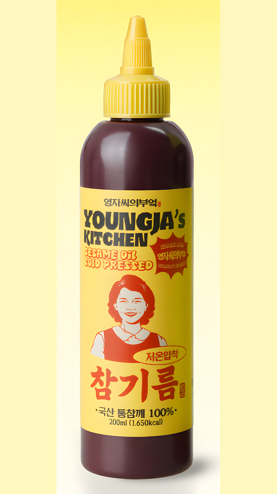
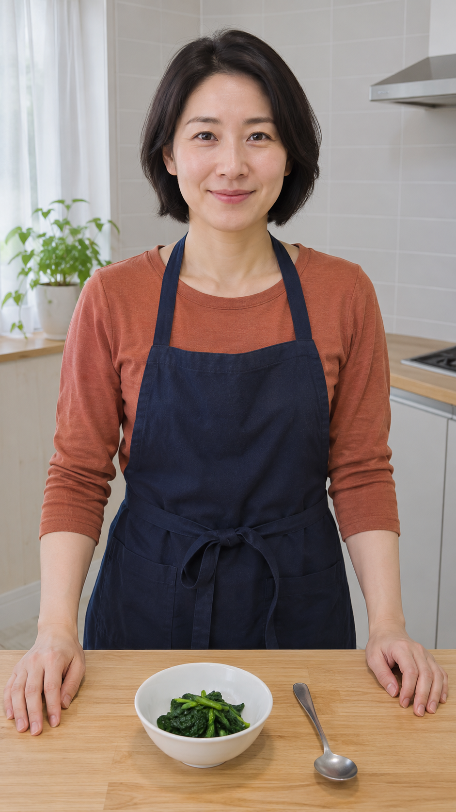
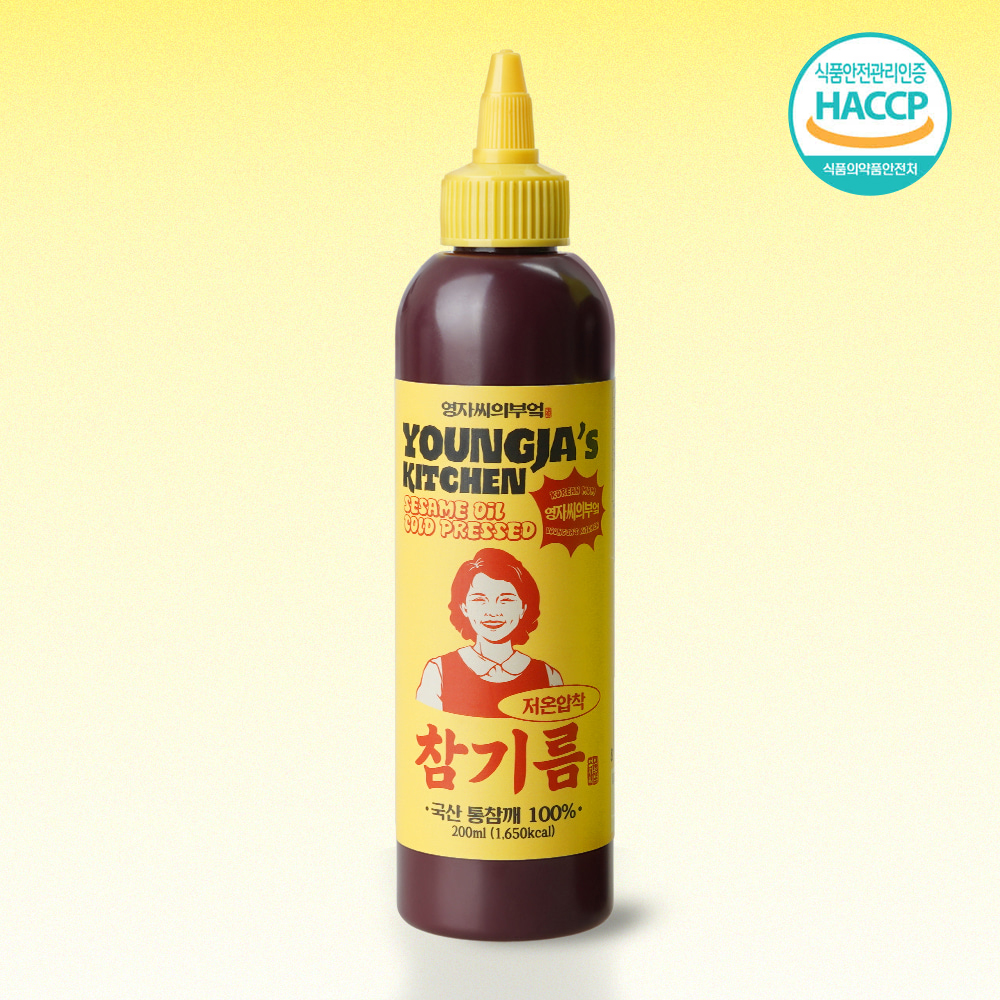
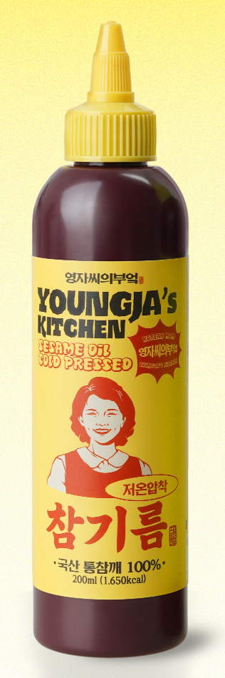
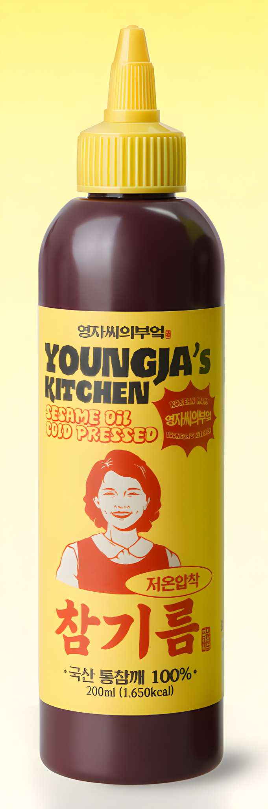

이전 · 원본 제품 사진
기존 Job 2dbe3477-1824-4ab7-a4c4-01c38315b815 · 새 생성 없음
SESAME AD LAB · 기획 · 제품 이해 · 연출 · 결과
← 소재 테스트제품 이해와 메시지에서 출발해 이야기·몰입감·제품 보존을 비교합니다. 각 실험의 오더, 실제 프롬프트, 참조 사진과 결과를 남깁니다. 기존 네 모델 비교와 이전 실험도 보존합니다.
최신 이야기형 CF · 바로 전 버섯 CF · 이전 몰입형 혼합 · 네 모델 비교
최신 실험 · 2026.11.26 · 이야기형 CF / 직접 자막·엔드카드
제품을 선택하고 조금 더한 뒤, 고소함의 감각을 큰 공간 변화로 확장하고 한입과 제품으로 회수하려는 한 편입니다. 이야기·앵글·리듬은 이번 기획의 선택이며 모든 광고에 적용하는 필수 구성이 아닙니다.
시댄스 원본 · 자막 정확성 미통과
큰 문구는 생성됐지만 띄어쓰기 누락과 엔드카드의 추가 음절 글자가 있습니다. 후작업으로 고치지 않고 실험 결과 그대로 공개합니다.
새 영상 원본 열기 · 15.04초 · 480×854 · 오디오 포함 · 후합성 자막/엔드카드 없음
제품을 고르는 행동과 실제 사용 뒤 참깨 공간이 나타나고 한입과 제품 컷으로 이어집니다. 이전의 빛 아치보다 원료 연상이 직접적이지만, 이 자체가 고소함 전달이나 몰입감 성공을 입증하지는 않습니다.
한입을 먹는 대표 화면에서도 참깨 배경이 남아 있습니다. 계획했던 한입 전 현실 주방 복귀가 명확히 지켜졌다고 보기는 어렵습니다. 엔드카드는 주방 배경으로 돌아옵니다.
기대한 문구는 “마지막 한 가지”이며, 읽히는 표본은 “마지막 한가지”로 띄어쓰기가 빠졌습니다. 큰 한글은 생성됐지만 요청 원문과 정확히 일치하지 않습니다.
큰 “고소한 마무리”는 읽히지만 위에 “고”, “고,소,한” 같은 별도 음절 문구가 추가됐습니다. 요청한 두 문구만 남는 결과가 아니며 의도한 순차 노출이 정확히 구현됐다고 할 수 없습니다.
마지막에는 같은 계열의 병을 크게 보여주는 제품 엔드카드가 있습니다. 다만 추가 글자가 남아 있어 정확한 최종 광고 카드로 통과시키지 않습니다. 제품의 작은 인쇄와 외형의 전체 구간 보존은 별도 확인이 필요합니다.
실제 프롬프트에 “고, 소, 한, 마, 무, 리”를 열거해 순차 노출을 설명한 부분이 있습니다. 모델이 이를 화면에 써야 할 별도 문구로 해석했을 가능성이 있습니다. 이 한 번으로 원인을 확정하거나 시댄스의 한글 능력 전체를 일반화하지 않습니다.
대표 시각 표본·시작/끝 화면과 파일 정보, 로컬 기계 음성 전사에 근거합니다. 전체 연속모션·정밀 음향 감상·광고 효과의 검증은 아닙니다. 자막이나 엔드카드를 후작업으로 덧씌우거나 고친 원본이 아닙니다.
시댄스 2.5, 15초 영상, 480p Draft, 9:16 기준. 영자씨의부엌 저온압착 국산 스퀴즈 참기름 200ml의 실사 몰입형 CF. 기존 제품 사진과 허구 성인·주방 앵커를 사용한다. 제작 목표: 제품의 핵심 메시지인 고소한 마무리가 사건의 원인이 되고, 15초 안에 기대·개입·변화·회수가 있는 짧은 이야기를 만든다. 광고주에게 음식/훅/결말을 다시 묻지 않고 제작 쪽에서 결정한다. 부모가 정한 이야기 뼈대: 식사를 시작하려다 마지막 한 가지를 떠올려 멈춘다 → 이 참기름을 한 번 소량 더하는 선택 → 접촉에서 시작한 고소함의 감각이 현실을 넘어 크게 확장되는 사건 → 앞에서 미뤘던 한입 또는 이에 준하는 명확한 행동의 완결, 같은 제품으로 회수. 최초 장면에 사건의 결과나 이상한 징후를 먼저 보여줘 궁금증을 만들어도 되지만 원인과 회수는 명료해야 한다. 음식은 제품이 쓰이는 배경이며 제품보다 기억에 남는 주인공이 되어서는 안 된다. 아스트라가 설계할 부분: 이 뼈대를 단순 멈춤/뿌리기/웃음으로 끝내지 않을, 처음부터 시선을 끌고 고소함을 느끼게 하는 구체적 시각 사건과 전환·리듬·카메라·음식 선택. 액체 양 대신 감각과 공간/크기/시간의 경험을 대담하게 연출한다. 장식적인 빛 아치의 반복이나 무관한 회오리, 음식만 보이는 긴 접사 터널은 피한다. 한 장소/한 성인/한 핵심 사건으로 충분히 읽히게 하고, 고정 컷 수·렌즈·초표를 그대로 베끼지 않는다. 실제 사용을 보여줄 때: 조금 한 번 짧게 더하고 즉시 압력을 풀고 병을 세워 멈춘다. 소스처럼 쏟거나 기름의 양/두께를 늘리지 않는다. 제품 갈색 병/노란 라벨·목/원래 노즐·캡 실루엣은 유지. 개봉 방식은 미확인이므로 개봉 동작은 생략하고 사진에 없는 힌지·플립캡을 만들지 않는다. 제품명과 고소한 마무리가 들리는 짧고 자연스러운 한국어 음성, BGM필수. 이번 한 편은 Dan이 직접 요청한 자막/엔드카드 실험이다. 짧은 한글 카피를 영상 안에서 직접 생성하고 엔드카드를 15초 안에 포함한다. 평가할 원본에 후작업 자막이나 엔드카드를 덧씌워 성공한 것처럼 보이지 않는다. 존재하지 않는 효능/비교우위/실제 후기는 발명하지 않는다. 이펙트가 아니라 이 참기름을 기억하는 결말을 만든다. 시트: Image1 제품 AI 2K, Image2 구독 GPT 허구 성인·주방. 첨부 순서 유지. Image2 속 음식은 인물/공간 앵커의 소품일 뿐 필수 기획이 아니다. 제품 사진을 다시 생성하지 않는다. 추가 지시: 초반 문구는 정확히 “마지막 한 가지”, 마지막 문구는 정확히 “고소한 마무리”. 참고 E01 슬라이드 인 또는 E03 완성 음절 순차 등장으로 단순하고 읽히는 타이포를 설계한다. 원작 세부 모션 복사나 확인했다고 주장하지 않는다. 후반 2~3초는 같은 제품이 크게 보이는 간결한 엔드카드로 회수하고 마지막 문구를 읽을 시간 동안 안정시킨다. 긴 제품명/가격/주장/CTA를 더 만들지 않는다. BGM과 짧은 브랜드 음성은 유지. 이는 이번 실험만의 문자금지 예외이며 기본 제작 정책을 전역 수정하지 않는다.
15초 세로 9:16 실사 이야기형 CF. Image1은 영자씨의부엌 저온압착 국산 스퀴즈 참기름200ml의 정확한 제품 기준이다. 갈색 병, 노란 라벨·목, 원래 노즐·캡 외부 실루엣, 기존 인물 그림과 검정·빨강 인쇄를 유지한다. 사용 준비 상태로 시작해 개봉·재밀봉은 생략하고 새 힌지나 플립캡을 만들지 않는다. Image2의 동일한 허구 성인 여성, 검은 단발·테라코타 상의·남색 앞치마와 밝은 주방. 사진 속 시금치 대신 작은 흰 볼의 달걀밥. 0~2.5초. 렌즈 가까운 숟가락의 한입과 뒤의 얼굴을 함께 보는 정면. 막 먹으려다 스스로 딱 멈추고 옆의 노란 라벨 병을 본다. 숟가락을 볼에 내려놓고 병을 잡는다. 상단 빈 밝은 벽에 차콜색 굵은 2D 한글 고딕으로 정확히 "마지막 한 가지". 완성 단어 "마지막"이 짧게 슬라이드 인하고 바로 오른쪽에 "한 가지"가 붙는다. 0.75초까지 완성하고 카메라와 글자를 안정시켜 읽힌 뒤 사용 컷 전에 사라진다. 얼굴·손·숟가락·제품을 가리지 않는다. 이어지는 짧은 사용 장면. 병을 잡는 동작을 이어 사선 위쪽의 가까운 구도로 컷해 라벨·노즐·음식의 관계를 짧고 명확하게 보여준다. 아주 적은 양을 한 번만 짧게 더하고 즉시 손의 압력을 풀어 병을 바로 세운다. 긴 분출 접사는 없다. 이후 더 나오지 않고 음식에 얇은 윤기만 남는다. 감각 확장의 절정. 작은 접촉 윤기의 반짝임을 이어, 세워진 제품을 가까운 전경에 둔 조리대 높이의 넓은 구도로 컷한다. 같은 인물과 볼이 뒤에 보이는 채 주방 뒤 원근이 급격히 벌어진다. 사람보다 훨씬 큰 건조한 베이지색 참깨 형상들이 양옆으로 비켜난다. 가까운 참깨 가장자리가 화면 일부를 빠르게 가렸다 열 때 카메라도 짧게 옆으로 움직여, 그 뒤의 먼 형상과 정상 크기의 병·인물 사이 압도적인 깊이를 드러낸다. 빠른 열림 뒤 잠깐 느려져 펼쳐진 공간을 읽힌다. 단순한 거대 참깨 배경을 오래 바라보는 컷이 아니다. 이 참기름을 더한 고소함의 감각적 상상이며, 참깨는 음식에 떨어지지 않는다. 인물·기름·음식·제품의 실제 크기와 양은 그대로다. 12.5초 이전에 마칠 행동의 회수. 처음의 얼굴과 숟가락 관계가 읽히는 정면으로 돌아온다. 성인이 미뤘던 한입을 다시 들어 입으로 가져가는 동안 큰 형상이 뒤로 멀어져 사라지고 원래 주방 벽이 돌아와 공간이 닫히는 모습을 함께 보여준다. 현실로 돌아온 뒤 한입을 실제로 입에 넣어 행동을 끝낸다. 웃음만으로 대신하지 않는다. 12.5~15초. 같은 제품 정면을 크게 보여주는 별도 엔드카드로 컷한다. 밝고 정돈된 같은 주방 배경, 원래 캡부터 병 바닥까지 온전히 포함. 위쪽 빈 공간에 정확히 "고소한 마무리". 고, 소, 한, 마, 무, 리의 완성된 음절을 고정 위치에서 차례로 켜고 '한' 뒤 한 칸을 둔다. 자모 조립 없이 13초까지 완성한다. 13~15초는 글리프·철자·간격·위치와 병·카메라를 고정해 마지막 프레임까지 읽힌다. 문구가 캡·라벨을 가리지 않는다. 한국어 성인 내레이션 한 트랙: "영자씨의부엌 저온압착 국산 참기름. 조금 더해, 고소한 한입." 인물의 별도 대사는 없다. 따뜻한 BGM 필수. 첫 멈춤에 짧은 쉼, 공간의 빠른 열림에서 넓어지는 화음, 닫힘과 한입에서 짧은 종지로 이어지되 브랜드 발화를 덮지 않는다. 장식적 빛 아치·액체 파도·회오리·음식 접사 터널·새 장소·추가 사용은 넣지 않는다. 기름 고임이나 소스처럼 덮임은 없다. 지정한 두 카피만 영상 안에 직접 생성한다. 다른 브랜드·가격·CTA·효능·제조공정·실제 후기 문구는 추가하지 않는다.


기존에 준비한 두 사진을 재사용했습니다. 이번 영상용 이미지 생성·재업로드는 없으며, AI 2K 보완이 실제 인쇄 글자 정확도를 보증하지 않습니다.
{
"source": "현재 실행 메시지와 brief composition_policy/direction_grammar, parent_plan_review.json",
"selected": "이번 B안 유지. 친구 구조는 이 한 편의 참고일 뿐 공통 광고 규칙으로 승격하지 않음.",
"changes": [
"초반 정면의 숟가락 정지와 시선으로 선택 읽히기, 카피 읽기 동안 카메라 안정.",
"사용은 사선 위쪽 가까운 컷으로 짧게 확인하고 병 바로 세우기.",
"작은 접촉 윤기에서 세워진 제품 전경의 낮은 넓은 구도로 연결; 참깨 전경 가림과 짧은 측면 이동으로 빠르게 공간을 열고 잠깐 감속.",
"원래 정면 관계로 돌아와 같은 한입과 공간 닫힘을 동시에 읽히기.",
"12.5초 엔드카드 시작, 13~15초 글자/병/카메라 고정."
],
"unchanged": [
"선택→소량 한 번→같은 공간 확장→한입과 닫힘→동일 제품 카드",
"두 정확 한글 문구",
"기존 이미지 둘만, 새 동작/장소/이미지 없음"
],
"quality_status": "미검수; 실제 원본에서 서사/사용/라벨/자막/엔드카드 따로 판정",
"authorization": "2026-11-26 부모를 통해 전달된 Dan의 이번 오더 신규 count1 실행 지시. 기존 brief의 prepare_only는 이전 단계 기록."
}Codex가 자료·중심 메시지·구성·오더와 검토를 맡고, Dan이 지정한 아스트라 제작 세션이 실제 프롬프트를 작성해 직접 제출했습니다. 실제 동작과 제품의 사실 경계를 지키면서 표현 방식은 자유롭게 선택하는 실험입니다.
영자 씨의 부욕 저묵 저어 납착 국산 참기름 조금 더해 고소한 한입
제품명과 발음은 기계가 틀리게 인식할 수 있습니다. 실제 음성은 영상을 재생해 확인해 주세요.
바로 전 실험 · 2026.11.25 · 제품 이해 보강
Dan이 첨부한 화면의 기존 몰입형 CF입니다. 제품 용도·사용량을 전달한 뒤 만든 결과를 이 랩에도 연결했습니다. 새 영상 생성이나 재편집 없이 같은 완료 영상을 사용합니다.
영상 원본 열기 · Seedance 2.5 / 15초 / 480p / Draft / 9:16 / 오디오 포함
영자씨의부엌 저온압착 국산 스퀴즈 참기름 200ml의 15초 세로 몰입형 CF. 저녁 식탁 위 작은 무광 접시에 이미 구운 버섯 몇 조각이 놓여 있다. 성인의 손이 제품 라벨을 읽히며 사용 준비된 병으로 아주 적은 양을 한 번 짧게 더하고, 곧바로 압력을 풀어 병을 세워 접시 곁에 둔다. 그 뒤에는 병에서 더 나오지 않는다. 사용 장면을 끝내고, 병이 접시 곁에 바로 서 있으며 손이 물러난 별도 컷으로 명확히 전환한다. 이 화면에서 분출이 없음을 먼저 읽힌다. 큰 사건은 기름의 추가 분출이 끝난 후 시작한다. 버섯에 남은 얇은 윤기의 작은 반사광이 점등 신호가 되어 호박빛의 커다란 아치들이 식탁 위와 관객 가까운 전경에 순차로 켜진다. 빛의 아치가 식탁 너머 배경 높이까지 펼쳐져 하나의 거대한 천장을 이루고, 가까운 빛과 먼 빛의 겹침이 공간을 감싼다. 이것은 고소한 마무리를 느끼는 감각의 광고적 빛 연출이며 실제 기름이나 연기·증기가 아니다. 카메라가 노즐·음식 표면 안으로 들어가는 방식이나 단순 접사 확대는 쓰지 않는다. 현실의 접시·음식 양·표면 상태는 변하지 않고 병은 세워져 있다. 절정 뒤 아치가 바깥부터 차례로 사라져 마지막 작은 빛이 같은 음식의 얇은 윤기에 남는다. 같은 병의 정면 라벨과 작은 접시를 한 화면에 남겨 현실의 소량 마무리로 끝낸다. 한국어 내레이션은 '영자씨의부엌, 저온압착 국산 참기름. 조금 더하는 고소한 마무리.' 낮은 따뜻한 BGM은 아치가 켜질 때만 부드럽게 확장되고 발화를 가리지 않는다. 새 자막은 생성하지 않는다. 갈색 병·노란 라벨과 목·기존 노즐·인물 그림을 유지한다. 얼굴·시식·소비자 후기·효능 주장은 없다.
15초, 세로 9:16의 실사 몰입형 참기름 CF. 참조 이미지 1의 영자씨의부엌 저온압착 국산 스퀴즈 참기름 200ml 병을 사용한다. 갈색 병, 노란 라벨과 목, 가늘어지는 원래 노즐, 기존 검정·빨강 인쇄와 인물 그림을 보존한다. 저녁의 소박한 식탁에 작은 무광 접시와 이미 구운 버섯 몇 조각. 성인의 손이 제품을 보여주고 사용 준비된 노즐로 버섯에 아주 적은 양을 단 한 번 짧게 더한다. 곧바로 손의 압력을 풀고 병을 바로 세워 접시 옆에 놓는다. 짜는 장면은 여기서 끝낸다. 병이 접시 곁에 바로 서 있고 손이 물러난 별도 컷으로 명확하게 전환한다. 이 정지 상태의 화면에서 분출이 없음을 먼저 보여준 뒤에만 빛의 사건을 시작한다. 짜는 장면 위에 빛 효과를 겹치거나 효과를 위해 분출 시간을 늘리지 않는다. 이후 병은 세워진 채 더 나오지 않고, 음식에는 얇고 가벼운 윤기만 남는다. 개봉 동작은 생략한다. 그 작은 윤기에서 반짝한 빛이 신호가 되어, 반투명한 호박빛 조명 아치들이 식탁 위로 순차 점등한다. 가까운 전경의 거대한 빛의 아치와 식탁 뒤 높은 아치들이 차례로 겹쳐 공간 전체에 빛의 천장을 펼친다. 접시와 바로 세운 제품이 아래에 보이는 넓은 화면에서 압도적인 규모·깊이·점등의 움직임을 경험하게 한다. 고소한 마무리를 상상하는 명백한 광고적 빛 연출이다. 아치는 빛일 뿐 액체·기름·연기나 새로운 물체가 아니며, 음식과 식탁의 실제 크기·양·형태는 그대로다. 기름이 솟거나 공중으로 흘러 아치를 만들지 않는다. 카메라는 노즐이나 음식 표면 안으로 들어가지 않는다. 아치들이 바깥에서 안쪽으로 차례로 사라지고 마지막 작은 반사광이 같은 버섯의 얇은 윤기에 남는다. 같은 접시와 같은 병의 정면 라벨을 보여주며 현실의 조용한 식탁으로 완결한다. 기름 고임·두꺼운 소스·파도·회오리·추가 짜기, 새 캡·힌지·개방장치를 만들지 않는다. 자연스럽고 명확한 한국어 성인 내레이션: "영자씨의부엌, 저온압착 국산 참기름. 조금 더하는 고소한 마무리." 따뜻하고 절제된 BGM을 반드시 포함하고, 빛의 점등과 소멸에 맞춰 부드럽게 커졌다 가라앉되 음성을 덮지 않는다. 얼굴이나 먹는 연기, 실제 후기·효능·비교 우위를 넣지 않는다. 새 화면 자막이나 그래픽 문구 없이 기존 제품 디자인을 유지한다.
원본과 크롭은 비교용이며, 실제 제출은 제품 AI 2K 한 장입니다. AI 확대는 미세 라벨 글자 정확도를 보증하지 않습니다.


참기름 제품 사진 · 원본 / 제품 크롭 / 기본 2K / 로컬 AI 2K 비교 →
PRODUCT REFERENCE ONLY · 2026.11.25
기존 아스트라 연출 설계판의 실제 프롬프트·기획·인물·장소·시댄스 설정을 그대로 유지하고 제품 참조 한 장만 바꿨습니다. 새 생성은 한 판입니다. 제품 영역 크롭·AI 확대·입력 비율 보완을 함께 적용했으므로 순수 해상도 효과만 분리한 시험은 아닙니다. 같은 조건에서도 생성 결과는 달라질 수 있어 모든 차이를 사진 탓으로 단정하지 않습니다.
앞선 사진 교체 시도는 생성 시간 초과로 실패했습니다. 이번에는 비율을 보완한 사진으로 Dan이 추가 한 판을 새로 승인했습니다. 프롬프트와 나머지 사진·설정은 그대로입니다. 앞선 실패 기록 보기 →
각 영상을 처음부터 함께 재생합니다. 서로 다른 동작의 순간까지 맞춘 재생은 아닙니다.
기존 Job 2dbe3477-1824-4ab7-a4c4-01c38315b815 · 새 생성 없음
480×854 · 15.072초 · Job 8c822191-284b-42d5-86f6-d08d0f0b51f3


이번 재시도는 생성 완료됐습니다. 마지막 제품이 이전보다 크게 보여 큰 표기는 읽기 쉬워 보이지만, 사용 장면은 노즐 접사여서 라벨 개선을 비교하기 어렵습니다. 음식 내부의 깊이와 윤기, 완성 음식 근접→한입→제품 마무리는 표본에 보입니다. 다만 혼합 중 터널 같은 구도와 완성 음식 위 채소 층이 남아, 전체가 고르게 비벼지는 목표를 완전히 충족했다고 보지는 않습니다.
아스트라의 대표 흐름표와 원해상도 사용·끝 표본, 이전 끝 표본을 비교한 관찰입니다. 연속 모션·청취와 전 구간 라벨 정확성은 미검수입니다. 구도·제품 크기도 달라져 사진 확대만의 순수 효과나 이전 시간 초과의 원인을 입증하는 시험은 아닙니다.
Seedance 2.5, 15초, 480p, 세로 9:16. 영자씨의부엌 저온압착 국산 스퀴즈 참기름 200ml의 밝고 따뜻한 실사 CF. 참기름이 닿은 같은 재료를 숟가락으로 들어 올리고 접는 실제 혼합을 비현실적인 크기와 깊이로 확장한다. 관객이 음식과 함께 비벼지는 순간이 광고의 중심이다. 참고 이미지 순서는 제품→인물→장소. 같은 성인 여성의 갈색 낮은 번 머리, 아이보리 셔츠와 올리브 앞치마를 유지한다. 같은 왼쪽 창과 밝은 주방, 원목 식탁, 크림색 그릇을 사용하며 장소 사진의 흰밥을 밥·채소·고추장이 있는 비빔밥으로 표현한다. 시트의 분할 구성이나 제품 배경 HACCP 마크는 화면 디자인으로 옮기지 않는다. 사용 준비된 원제품의 노즐에서 가느다란 참기름이 재료에 닿는다. 노즐과 닿는 재료가 읽히는 가까운 사선 시점으로 짧게 시작한다. 여성의 숟가락이 바로 그 재료 아래 흰밥까지 들어가 퍼올린다. 이 동작을 연결해 시점이 숟가락 위 재료 사이로 낮아지고 크기와 깊이가 압도적으로 커진다. 혼합에 가장 긴 호흡을 준다. 숟가락 가장자리가 밥·채소를 들어 올리고 안쪽으로 기울여 접는 힘을 볼 수 있게 한다. 거대한 가까운 재료층이 시야를 비스듬히 가로질러 덮고 뒤의 재료와 맞닿는다. 카메라도 그 접힘에 짧게 밀려 움직인다. 재료가 다시 열릴 때 같은 밥알에 고추장이 더 고르게 묻은 모습이 드러난다. 전경과 뒤층이 교차하고 접히는 변화로 관객이 혼합 속에 놓인 듯한 운동감을 만든다. 참기름은 그 밥알과 채소에 붙은 얇고 먹음직스러운 윤기로 빛난다. 주요 퍼올림과 접힘은 숟가락의 접촉에 연결한다. 이미 완성된 음식 터널을 통과하는 비행, 일정한 원통형 회전, 독립된 기름 나선이나 유리 덩어리, 저절로 완성되는 음식은 만들지 않는다. 마지막 접힌 재료가 같은 그릇으로 내려앉는 동작을 따라 현실 크기로 돌아온다. 움직임을 가라앉히고 완성된 비빔밥을 먼저 알아볼 수 있게 보여준다. 고추장이 고르게 어우러진 밥알, 형태가 살아 있는 채소, 표면의 참기름 윤기가 읽힌다. 그 뒤 여성이 바로 그 그릇에서 음식이 담긴 한 숟가락을 떠 입에 넣고 음미하며 자연스럽게 미소 짓는다. 실제 한입을 보여준다. 마지막 화면에 잘 비벼진 같은 그릇과 같은 제품 병을 함께 남긴다. 음식 상태를 비비기 전으로 되돌리지 않는다. 제품은 사진에서 보이는 짙은 갈색의 가늘고 긴 병, 넓은 세로 홈 노란 원통형 목, 위로 더 좁고 높게 가늘어지는 세로 홈 노즐과 짧게 좁아지는 끝을 사용부터 마지막까지 유지한다. 정면 노란 라벨, 붉은 초상, 기존 글자와 비율을 보존한다. 개봉 동작은 생략한다. 플립캡·힌지·새 부품을 추가하지 않는다. 정면에서 확인된 표면 위주로 보여주고 병을 뒤로 돌려 미확인 인쇄나 구조를 드러내지 않는다. 15초 안에서 짧은 사용 도입→가장 긴 몰입형 혼합→완성 음식을 읽는 여유→한입과 안정된 마무리의 리듬을 만든다. 별도 인물·사건·공간을 추가하지 않는다. 전체에 독창적인 BGM을 두고 혼합의 운동감을 받친 뒤 음식 확인과 만족에서 부드럽게 가라앉힌다. 새 광고 카피·자막은 넣지 않는다. 실제 향·맛·효능이 검증됐다는 문구를 만들지 않는다.
문자 단위 동일 대조 완료. 모델 Seedance 2.5 · omni_reference · 15초 · 480p · 9:16 · 오디오 요청 · count 1. 새 결과도 2K 영상이 아니라 480p 영상입니다. 2K는 입력 사진의 긴 변입니다.
Dan의 새로운 1회 승인에 따라, 직전 시간 초과 작업과 별도로 제출한다. baseline_prompt.txt는 문자 변경 없이 재사용하며 모델·모드·15초·480p·9:16·오디오·count와 인물/장소 참조를 유지했다. 요청 차이는 첫 제품 참조 UUID 한 개다. 제품 입력은 이전 AI 확대본의 제품 픽셀을 보존하고 좌우 여백을 더한 1152×2048 파일이며 새로 생성하지 않았다. 세 사진의 SHA와 크기·비율을 사전 확인했고 새 제품 사진을 직접 확인했다. 입력 보완만으로 생성 성공이나 제품 재현 개선을 보장하지 않는다. 이전 시간 초과가 비율 때문이었다고 단정하지 않는다. 이번 제출 후에는 자동 재시도하지 않는다.
제품(이번 로컬 AI 2K) → 인물(이전과 동일) → 장소(이전과 동일). 아스트라가 기존 자신의 프롬프트를 그대로 재사용하고 자기 MCP로 직접 제출했습니다. 견적 45크레딧은 실제 차감 대조가 아닙니다. 추가 생성·자동 재시도 없음.
프롬프트 SHA-256: 05e61a3b1c064a38ab744fa525827c0beb31c103da8e30204da409d480e99d2e
PRODUCT REFERENCE ONLY · 2026.11.25 · FAILED
새 결과 영상은 생성되지 않았습니다. 시댄스가 시간 초과 실패를 반환했습니다. 기존 성공 영상 9편은 그대로이며, 이 시도를 완성 영상 수에 더하지 않습니다.
생성 시간이 초과되었어요. 다시 시도해 주세요.
Job 3fa46de9-1559-4693-ae0d-a69a692a219a · 제출 1회 · 추가 생성/자동 재시도 0회
직전 아스트라 연출 설계판과 실제 프롬프트·기획·인물/장소 참조·모델/15초/480p/9:16/오디오 설정을 그대로 유지했습니다. 실제 접수 응답의 차이는 첫 제품 참조 ID 한 개뿐이며, CDN에서 받은 사진도 로컬 승인본과 해시가 동일합니다.
이번 실제 입력은 681×2048(가로÷세로 약 0.333)로, Seedance 2.5 공식 참조 이미지 비율 0.4~2.5보다 좁습니다. 제출 전에 이 조건을 확인하지 못했습니다. Higgsfield가 내부에서 보정하는지는 미확인이며, 비율이 시간 초과의 원인이라고 확정하지 않습니다. IP나 사진 거부 메시지는 반환되지 않았습니다.


제품을 늘이거나 자르지 않고 좌우 여백만 추가한 보완본을 준비했으며, 향후 아스트라 전달 전에 필요한 경우에만 비율을 보완하도록 연결했습니다. 이 실패 기록 작성 당시에는 보완본으로 추가 발주하지 않았으며, 이후 새 승인을 받은 재시도는 위쪽 별도 기록에 구분했습니다. 실제 결과가 없어 글자 보존·뚜껑·혼합 연출의 개선 여부는 판정할 수 없습니다.
Seedance 2.5, 15초, 480p, 세로 9:16. 영자씨의부엌 저온압착 국산 스퀴즈 참기름 200ml의 밝고 따뜻한 실사 CF. 참기름이 닿은 같은 재료를 숟가락으로 들어 올리고 접는 실제 혼합을 비현실적인 크기와 깊이로 확장한다. 관객이 음식과 함께 비벼지는 순간이 광고의 중심이다. 참고 이미지 순서는 제품→인물→장소. 같은 성인 여성의 갈색 낮은 번 머리, 아이보리 셔츠와 올리브 앞치마를 유지한다. 같은 왼쪽 창과 밝은 주방, 원목 식탁, 크림색 그릇을 사용하며 장소 사진의 흰밥을 밥·채소·고추장이 있는 비빔밥으로 표현한다. 시트의 분할 구성이나 제품 배경 HACCP 마크는 화면 디자인으로 옮기지 않는다. 사용 준비된 원제품의 노즐에서 가느다란 참기름이 재료에 닿는다. 노즐과 닿는 재료가 읽히는 가까운 사선 시점으로 짧게 시작한다. 여성의 숟가락이 바로 그 재료 아래 흰밥까지 들어가 퍼올린다. 이 동작을 연결해 시점이 숟가락 위 재료 사이로 낮아지고 크기와 깊이가 압도적으로 커진다. 혼합에 가장 긴 호흡을 준다. 숟가락 가장자리가 밥·채소를 들어 올리고 안쪽으로 기울여 접는 힘을 볼 수 있게 한다. 거대한 가까운 재료층이 시야를 비스듬히 가로질러 덮고 뒤의 재료와 맞닿는다. 카메라도 그 접힘에 짧게 밀려 움직인다. 재료가 다시 열릴 때 같은 밥알에 고추장이 더 고르게 묻은 모습이 드러난다. 전경과 뒤층이 교차하고 접히는 변화로 관객이 혼합 속에 놓인 듯한 운동감을 만든다. 참기름은 그 밥알과 채소에 붙은 얇고 먹음직스러운 윤기로 빛난다. 주요 퍼올림과 접힘은 숟가락의 접촉에 연결한다. 이미 완성된 음식 터널을 통과하는 비행, 일정한 원통형 회전, 독립된 기름 나선이나 유리 덩어리, 저절로 완성되는 음식은 만들지 않는다. 마지막 접힌 재료가 같은 그릇으로 내려앉는 동작을 따라 현실 크기로 돌아온다. 움직임을 가라앉히고 완성된 비빔밥을 먼저 알아볼 수 있게 보여준다. 고추장이 고르게 어우러진 밥알, 형태가 살아 있는 채소, 표면의 참기름 윤기가 읽힌다. 그 뒤 여성이 바로 그 그릇에서 음식이 담긴 한 숟가락을 떠 입에 넣고 음미하며 자연스럽게 미소 짓는다. 실제 한입을 보여준다. 마지막 화면에 잘 비벼진 같은 그릇과 같은 제품 병을 함께 남긴다. 음식 상태를 비비기 전으로 되돌리지 않는다. 제품은 사진에서 보이는 짙은 갈색의 가늘고 긴 병, 넓은 세로 홈 노란 원통형 목, 위로 더 좁고 높게 가늘어지는 세로 홈 노즐과 짧게 좁아지는 끝을 사용부터 마지막까지 유지한다. 정면 노란 라벨, 붉은 초상, 기존 글자와 비율을 보존한다. 개봉 동작은 생략한다. 플립캡·힌지·새 부품을 추가하지 않는다. 정면에서 확인된 표면 위주로 보여주고 병을 뒤로 돌려 미확인 인쇄나 구조를 드러내지 않는다. 15초 안에서 짧은 사용 도입→가장 긴 몰입형 혼합→완성 음식을 읽는 여유→한입과 안정된 마무리의 리듬을 만든다. 별도 인물·사건·공간을 추가하지 않는다. 전체에 독창적인 BGM을 두고 혼합의 운동감을 받친 뒤 음식 확인과 만족에서 부드럽게 가라앉힌다. 새 광고 카피·자막은 넣지 않는다. 실제 향·맛·효능이 검증됐다는 문구를 만들지 않는다.
프롬프트 SHA-256: 05e61a3b1c064a38ab744fa525827c0beb31c103da8e30204da409d480e99d2e
제품 참조 사진만 변경하는 비교 실험이다. baseline_prompt.txt를 문자 변경 없이 그대로 재사용하고 이전 요청에서 params.medias[0].value만 새 업로드 제품 UUID로 변경했다. 인물·장소와 순서, 모델·모드·길이·해상도·비율·오디오·count는 유지했다. 입력 사진은 원본 제품 영역을 잘라 로컬 AI로 확대한 681×2048 파일이다. 사진을 직접 확인했으며 더 큰 제품 점유율과 확대 처리의 영향이 함께 포함된 비교이므로 단순 해상도만의 효과로 단정하지 않는다. 신규 이미지 생성이나 품질 지시 추가는 하지 않았다. 결과 개선 여부는 생성 후 대표 표본에서 관찰하되 연속 동작과 청취를 검증한 것으로 취급하지 않는다.
Seedance 2.5 · omni_reference · 15초 · 480p · 9:16 · 오디오 요청 · count 1. 아스트라 제작 세션이 기존 프롬프트를 그대로 재사용해 자기 MCP로 한 번만 제출했습니다. 견적 45크레딧이며 실제 차감·환불 내역은 확인하지 못했습니다.
NEW · ASTRA DIRECTION PLAN · 2026.11.25
기존 문장 틀에 연출 설계·이유·판단 기준을 추가한 뒤, Dan이 승인한 같은 오더와 실제 아스트라 연출안으로 제작했습니다. 핵심은 숟가락이 같은 재료를 들어 올리고 접는 움직임이 몰입형 장면과 함께 읽히는가입니다. 제품·인물·장소 사진은 이전과 같으며 새 영상은 한 편만 생성했습니다. 기존 8편은 그대로 보존했습니다.
각 영상의 처음부터 함께 재생합니다. 서로 다른 장면 시점까지 정렬하지는 않습니다.
기존 영상 재사용 · 새 생성 없음
480×854 · 15.05초 · Job 2dbe3477-1824-4ab7-a4c4-01c38315b815
승인된 한 판은 생성 완료됐다. 거대한 재료 내부 시점과 완성 후 한입은 보이지만, 핵심인 숟가락에 의한 지속적인 접힘·참기름과 함께 비비는 인과는 충분히 입증되지 않았다. 광고 표현 전체 성공으로 판정하지 않는다.
새 결과의 전체 흐름을 담은 대표 정지 장면표 1장을 관찰했다. 실시간 연속 모션·BGM 청취 검수는 아니며 정지 표본에서 보이지 않는 동작은 미확인으로 남겼다. 실제 480×854·15.05초 파일과 AAC 오디오 트랙은 확인했다. 생성 완료와 광고 표현의 성공은 구분합니다.
시댄스 2.5, 15초 영상, 480p, 9대16 기준. 현재는 기획 검토만, 영상 발주 0회. 영자씨의부엌 저온압착 국산 스퀴즈 참기름 200ml, 15초 CF(실사) — 아이보리 셔츠·올리브색 앞치마를 입은 기존 성인 여성이 햇빛 드는 집 주방의 원목 식탁에서 비빔밥에 참기름을 짜 넣고 숟가락으로 비빈다. 제품 포인트: 밥알과 채소를 감싸는 참기름의 먹음직스러운 윤기와 고소한 이미지. 제품이 만드는 변화: 가느다란 참기름이 닿은 밥·채소·고추장을 숟가락이 바닥부터 들어 올리고 접는다. 그 같은 재료가 함께 섞일수록 표면의 윤기가 빛나고 고르게 비벼진 음식으로 바뀐다. 훅과의 연결: 숟가락이 퍼올리는 같은 재료의 움직임을 비현실적인 크기와 깊이로 극대화한다. 관객이 윤기 나는 밥알·채소 사이에서 함께 휘말려 비벼지는 듯한 몰입감을 느끼되, 숟가락이 재료를 들어 올리고 접는 행동이 그 안에서도 읽혀야 한다. 훅 이름: 참기름이 감싼 재료와 함께 비벼지는 순간. 평범한 조리 접사를 넘어, 재료가 눈앞과 뒤를 가득 채우며 교차하고 접히는 역동적인 절정을 만든다. 참기름은 그 재료 표면의 윤기로 보이고, 따로 떠도는 기름 회오리나 이미 완성된 음식 통로 구경으로 대체하지 않는다. 반응: 완성된 비빔밥을 먼저 먹음직스럽게 보여준 뒤, 여성이 바로 그 음식이 담긴 한 숟가락을 떠 먹고 음미한다. 마무리: 같은 그릇의 잘 비벼진 비빔밥과 같은 제품 병이 함께 남는다. 광고 문법: 참기름이 재료에 닿음 → 같은 재료를 함께 비비는 몰입형 절정 → 완성 음식의 윤기와 질감 → 한입·만족 → 제품과 음식. 제품명: 저온압착 국산 스퀴즈 참기름 200ml. 브랜드: 영자씨의부엌. 톤: 밝고 따뜻한 실사 푸드 광고, 실제 음식 질감 속 비현실적으로 강한 운동감과 깊이. BGM 필수. 시트: 기존 제품 → 인물 → 장소 순서. 제품의 갈색 병·노란 목·가늘어지는 원래 노즐·라벨·비율을 유지한다. 사용 준비 상태로 등장하고 개봉 동작은 생략한다. 기존 주방 사진의 흰밥은 위 오더의 비빔밥으로 표현한다. 새 광고 카피·자막은 후반 합성하며 실제 향·맛·효능이 검증됐다는 문구는 만들지 않는다. 아스트라 연출 설계 요청: 위 오더의 제품 포인트·핵심 행동·변화·반응·마무리를 유지하면서 장면 구성, 카메라, 전환과 리듬을 설계하고 이유를 짧게 설명한다. 공통 컷 수나 초 배분은 고정하지 않는다. 제품 사용과 변화가 같은 행동으로 이어지도록 설계한다. 영상에서 확인할 핵심 판단 기준 3개와 제품 외형 보존 기준을 각각 관찰 가능한 통과·실패 조건으로 작성한다. 미리 성공했다고 평가하지 않는다. 결과는 연출안·설계 이유·최종 모델용 프롬프트 초안·판단 기준으로 구분한다. 현재는 기획 검토만 하며 이미지·영상 생성, 업로드, 유료 실행과 발주는 하지 않는다. 실제 제작은 Dan의 별도 승인 뒤에만 진행한다.
위 원문의 기획 전용 문구는 이전 검토 당시 상태입니다. 이후 Dan이 이 오더·연출안으로 영상 한 판을 새로 승인했습니다.
참기름이 닿은 자리에서 혼합 시작
왼쪽 창의 따뜻한 빛을 받는 원목 식탁. 참고 여성의 손이 원제품을 사용 준비 상태로 기울여 같은 크림색 그릇의 밥·채소·고추장에 가느다란 참기름을 짜 넣는다. 노즐과 기름이 닿는 재료가 함께 읽히는 가까운 사선 시점. 제품은 참고 정면에서 확인된 표면 위주로 보여주며 개봉이나 병 회전 소개는 하지 않는다. 이어 숟가락이 바로 그 윤기 나는 채소와 고추장 아래의 흰밥까지 파고든다.
들어 올림과 접힘 속에 놓이는 관객
숟가락 가장자리와 그 위로 함께 올라오는 밥·채소를 따라 시점이 재료 높이로 낮아진다. 크기는 비현실적으로 커지지만 실제 밥알과 채소 질감은 유지한다. 숟가락이 가까운 재료층을 들어 올리고 안쪽으로 기울여 접으면, 거대한 밥알과 채소가 가까운 전경을 비스듬히 가로질러 시야를 덮고 뒤의 재료층과 맞닿는다. 접촉하는 순간 고추장이 흰밥에 묻고 얇은 기름 광택이 그 표면을 따라 이어진다. 카메라는 그 접힘에 짧게 밀려 움직이고, 재료가 다시 열릴 때 더 고르게 물든 밥이 드러난다. 주요 퍼올림·접힘마다 숟가락 가장자리와 재료 접촉이 읽히게 한다. 중심이 뚫린 원통 통로나 일정한 궤도의 회전 대신, 가까운 재료가 가로막고 뒤층으로 접히는 깊이 변화를 만든다.
완성된 같은 음식의 정지감
움직임을 가라앉힌 낮은 사선 음식 화면. 같은 그릇에 고추장이 고르게 어우러진 밥알과 형태가 살아 있는 채소가 보이고, 왼쪽 빛이 표면의 얇은 참기름 윤기를 드러낸다. 완성된 그릇을 먼저 읽힌 뒤 숟가락이 그 음식에서 한입을 뜬다. 혼합 직전의 흰밥·채소 구획으로 되돌아가지 않는다.
그 한입의 만족과 제품을 함께 남김
여성이 보이는 중근경으로 넓어지며 음식이 실린 숟가락이 입에 들어가는 모습을 보여준다. 여성이 음미하며 자연스럽게 미소 짓는다. 같은 화면 아래 식탁에는 잘 비벼진 같은 그릇과 정면 라벨이 보이는 같은 병이 남는다. 원래 노즐과 병 비율을 유지한다. 마무리를 위해 별도의 제품 회전이나 새로운 요리를 추가하지 않는다.
이 안의 네 비트는 인과관계를 설명하는 단위이며 네 개의 필수 컷이나 다른 작업에 적용할 공통 규칙이 아니다. 15초에서는 실제 혼합에 가장 긴 호흡을 주고, 도입을 짧게 하되 완성 음식 확인과 실제 한입이 급하게 생략되지 않게 한다. 기존 음식 터널의 문제는 크기가 커도 이미 완성된 공간을 카메라만 통과한다는 데 있었다. 여기서는 숟가락의 접촉→재료의 들림→전경을 가리는 접힘→고추장과 윤기가 더 고르게 묻은 재료의 재등장을 중심 사건으로 삼는다. 카메라의 이동도 이 힘을 따라가므로 몰입과 비비기가 분리되지 않는다. 기름은 처음의 가느다란 줄기에서 재료에 붙은 광택으로 이어져 제품과 변화의 관계를 유지한다. 밝은 주방과 인물 소개는 행동 속에서 해결하고, 마지막 한입 화면에 제품과 그릇을 함께 남겨 사건 수를 늘리지 않는다. 사진은 제품 정면·인물 앞뒤와 얼굴·주방의 한 시점만 보여준다. 제품 뒤쪽 인쇄나 개봉 구조를 요구하지 않으며, 넓은 노란 세로 홈 목과 더 좁게 가늘어지는 노즐의 확인된 실루엣을 기준으로 삼는다. 아래 기준은 향후 결과를 연속 재생하며 판단할 조건이며, 현재는 결과가 없어 어떤 항목도 통과 판정하지 않았다.
Seedance 2.5, 15초, 480p, 세로 9:16. 영자씨의부엌 저온압착 국산 스퀴즈 참기름 200ml의 밝고 따뜻한 실사 CF. 참기름이 닿은 같은 재료를 숟가락으로 들어 올리고 접는 실제 혼합을 비현실적인 크기와 깊이로 확장한다. 관객이 음식과 함께 비벼지는 순간이 광고의 중심이다. 참고 이미지 순서는 제품→인물→장소. 같은 성인 여성의 갈색 낮은 번 머리, 아이보리 셔츠와 올리브 앞치마를 유지한다. 같은 왼쪽 창과 밝은 주방, 원목 식탁, 크림색 그릇을 사용하며 장소 사진의 흰밥을 밥·채소·고추장이 있는 비빔밥으로 표현한다. 시트의 분할 구성이나 제품 배경 HACCP 마크는 화면 디자인으로 옮기지 않는다. 사용 준비된 원제품의 노즐에서 가느다란 참기름이 재료에 닿는다. 노즐과 닿는 재료가 읽히는 가까운 사선 시점으로 짧게 시작한다. 여성의 숟가락이 바로 그 재료 아래 흰밥까지 들어가 퍼올린다. 이 동작을 연결해 시점이 숟가락 위 재료 사이로 낮아지고 크기와 깊이가 압도적으로 커진다. 혼합에 가장 긴 호흡을 준다. 숟가락 가장자리가 밥·채소를 들어 올리고 안쪽으로 기울여 접는 힘을 볼 수 있게 한다. 거대한 가까운 재료층이 시야를 비스듬히 가로질러 덮고 뒤의 재료와 맞닿는다. 카메라도 그 접힘에 짧게 밀려 움직인다. 재료가 다시 열릴 때 같은 밥알에 고추장이 더 고르게 묻은 모습이 드러난다. 전경과 뒤층이 교차하고 접히는 변화로 관객이 혼합 속에 놓인 듯한 운동감을 만든다. 참기름은 그 밥알과 채소에 붙은 얇고 먹음직스러운 윤기로 빛난다. 주요 퍼올림과 접힘은 숟가락의 접촉에 연결한다. 이미 완성된 음식 터널을 통과하는 비행, 일정한 원통형 회전, 독립된 기름 나선이나 유리 덩어리, 저절로 완성되는 음식은 만들지 않는다. 마지막 접힌 재료가 같은 그릇으로 내려앉는 동작을 따라 현실 크기로 돌아온다. 움직임을 가라앉히고 완성된 비빔밥을 먼저 알아볼 수 있게 보여준다. 고추장이 고르게 어우러진 밥알, 형태가 살아 있는 채소, 표면의 참기름 윤기가 읽힌다. 그 뒤 여성이 바로 그 그릇에서 음식이 담긴 한 숟가락을 떠 입에 넣고 음미하며 자연스럽게 미소 짓는다. 실제 한입을 보여준다. 마지막 화면에 잘 비벼진 같은 그릇과 같은 제품 병을 함께 남긴다. 음식 상태를 비비기 전으로 되돌리지 않는다. 제품은 사진에서 보이는 짙은 갈색의 가늘고 긴 병, 넓은 세로 홈 노란 원통형 목, 위로 더 좁고 높게 가늘어지는 세로 홈 노즐과 짧게 좁아지는 끝을 사용부터 마지막까지 유지한다. 정면 노란 라벨, 붉은 초상, 기존 글자와 비율을 보존한다. 개봉 동작은 생략한다. 플립캡·힌지·새 부품을 추가하지 않는다. 정면에서 확인된 표면 위주로 보여주고 병을 뒤로 돌려 미확인 인쇄나 구조를 드러내지 않는다. 15초 안에서 짧은 사용 도입→가장 긴 몰입형 혼합→완성 음식을 읽는 여유→한입과 안정된 마무리의 리듬을 만든다. 별도 인물·사건·공간을 추가하지 않는다. 전체에 독창적인 BGM을 두고 혼합의 운동감을 받친 뒤 음식 확인과 만족에서 부드럽게 가라앉힌다. 새 광고 카피·자막은 넣지 않는다. 실제 향·맛·효능이 검증됐다는 문구를 만들지 않는다.
승인된 연출안의 prompt에서 지난 검토단계 표지인 '미제출 모델용 프롬프트 초안 — '만 제거하여 최종 프롬프트로 확정했다. 연출 내용은 그대로 유지했다. 숟가락 접촉→같은 재료 들림→시야를 덮으며 접힘→다시 드러난 재료의 점진적 혼합과 얇은 윤기를 중심에 두고, 완성 음식을 먼저 확인한 뒤 그 음식의 한입과 제품·음식 마무리로 연결한다. 필수 컷 수·초표를 새로 추가하지 않았다. 세 원본 사진을 직접 확인했으며 제품 정면과 확인된 노즐 실루엣을 사용한다. 미확인 개봉 구조·뒷면은 발명하지 않는다. authorization.json의 이번 1회 승인에 따라 제출하며 과거 승인이나 계획 단계의 상태 표지는 추가 실행 권한으로 사용하지 않는다.
Seedance 2.5 / omni_reference / 15초 / 480p / 9:16 / 오디오 요청 / count 1. 같은 기존 아스트라 제작 세션이 작성하고 자기 MCP로 직접 제출했습니다. 사진 순서는 제품→인물→장소. 사전 견적 45크레딧은 실제 차감 내역 대조가 아닙니다. 재생성·추가 판은 만들지 않았습니다.
NEW EXPERIMENT · SEEDANCE 2.5 · 2026.11.22
Dan은 이전 결과가 “그냥 참기름을 넣고 밥 먹는 장면”이고 뚜껑도 바뀌었다고 평가했습니다. 순서만 맞는 결과로는 부족했습니다. 이번 오더는 관객이 윤기 나는 밥알·채소 사이에서 함께 비벼지는 듯한 비현실적인 크기·깊이·움직임과 완성 음식 먼저 보여주기→그 음식을 먹기, 원래 노즐 실루엣 유지를 동시에 요청했습니다. 같은 원본 사진 3장, 시댄스 15초 새 한 판이며 이전 일곱 결과는 보존했습니다.
0초부터 함께 재생하며 서로 다른 장면의 타이밍까지 맞추지는 않습니다.
기존 결과 재사용 · 새 생성 없음
480×854 · 15.072초 · Job 48a21c24-2040-4d62-9478-21927d395b15
새 영상 원본 열기 →이번 한 판의 대표 장면 관찰입니다. 순서만으로 몰입감이나 제품 보존까지 통과했다고 판단하지 않습니다. 전체 모션·BGM 청취·광고 성과 검증은 아닙니다.
시댄스 2.5, 15초 영상, 480p, 9대16 기준. 영자씨의부엌 저온압착 국산 스퀴즈 참기름 200ml, 15초 CF — 기존 아이보리 셔츠·올리브색 앞치마 차림 여성이 햇빛 드는 집 주방의 원목 식탁에서 비빔밥에 참기름을 넣고 비빈다. 제품 포인트: 참기름이 재료에 어우러지며 만드는 먹음직스러운 윤기와 고소한 이미지. 제품이 만드는 변화: 같은 병에서 나온 참기름을 밥·채소·고추장과 함께 비빈다. 숟가락이 재료를 퍼올리고 접을수록 고르게 섞이고, 밥알과 채소 표면에 윤기가 살아난다. 훅과의 연결: 참기름과 재료가 함께 섞이는 순간을 비현실적인 스케일로 확장해, 관객이 비빔밥 속 혼합을 체험하는 듯한 몰입감을 만든다. 훅 이름: 비빔밥 속으로 빠져드는 혼합의 절정. 사용·효과: 제품에서 짜낸 참기름이 비빔밥 재료에 닿는다. 여성이 숟가락으로 바닥의 밥까지 퍼올려 채소·고추장·참기름과 함께 접어 넣으며 비빈다. 이 혼합이 광고의 중심 볼거리다. 윤기 나는 밥알과 채소가 눈앞에서 거대한 재료층처럼 겹쳐지고, 숟가락에 의해 들리고 접히는 움직임이 화면 전체를 감싸며 휘몰아친다. 관객이 재료 사이에 들어가 함께 섞이는 듯한 압도적인 크기·깊이·움직임을 느끼게 한다. 평범한 젓기 접사만으로 끝내지 않는다. 이때 참기름은 밥알과 채소에 어우러진 윤기로 계속 읽힌다. 재료들이 서로 스치고 접힐 때 그 표면의 빛과 질감이 살아난다. 기름만 따로 떠서 장식물이 되지 않으며, 숟가락이 비빌수록 같은 음식이 실제로 섞여가는 상태 변화를 유지한다. 완성: 혼합의 절정이 끝나면 같은 그릇의 완성된 비빔밥을 먼저 먹음직스럽게 보여준다. 고추장이 고르게 어우러진 밥알, 형태가 살아 있는 채소, 참기름의 윤기가 분명하게 보인다. 반응: 여성이 바로 그 완성된 비빔밥에서 음식이 담긴 한 숟가락을 떠 먹고, 음미하며 만족스럽게 미소 짓는다. 마무리: 잘 비벼진 같은 비빔밥과 같은 참기름 병이 함께 남는다. 광고 문법: 참기름 짜 넣기 → 함께 비비며 혼합 속으로 몰입 → 완성된 비빔밥을 맛있게 보여주기 → 그 음식을 먹고 만족 → 제품과 음식 마무리. 몰입형 혼합에 중심을 두고, 사용·완성·한입·끝맺음도 명확하게 읽히게 한다. 제품 보존: 첨부 제품 사진의 갈색 병, 노란 목, 가늘어지는 노즐, 기존 라벨과 비율을 사용부터 마지막까지 동일하게 유지한다. 제품은 사용 준비가 된 상태로 등장하며 뚜껑을 여는 동작은 생략한다. 원제품에 없는 플립캡·힌지·부품을 추가하지 않는다. 음식 표현의 과장이 제품 형태에 영향을 주지 않는다. 톤: 밝고 따뜻하고 먹음직스러운 실사 질감, 비비는 순간의 강렬한 비현실적 몰입감. 전체 영상에 어울리는 독창적인 BGM 필수. 시트: 기존 제품 → 인물 → 장소 사진 순서. 같은 성인 여성과 의상·주방 유지. 새 화면 글자·광고 카피는 후반 합성. 세부 컷·초표·카메라는 제작 모델이 선택하되, 몰입형 혼합·음식 상태 변화·완성 후 먹기의 흐름·제품 외형 보존을 함께 충족한다.
영자씨의부엌 저온압착 국산 스퀴즈 참기름 200ml의 15초 세로 CF. 밝고 따뜻한 실사 음식 광고에, 비빔밥 속 혼합을 직접 체험하는 압도적인 비현실적 스케일을 결합한다. 참고 이미지 순서: 1 제품, 2 같은 성인 여성과 의상, 3 같은 햇빛 드는 주방과 원목 식탁. 여성은 갈색 로번 머리, 아이보리 셔츠와 올리브색 앞치마. 장소 사진의 흰밥은 채소와 고추장이 있는 비빔밥으로 바꾼다. 참고 시트의 분할 화면과 제품 사진 배경의 HACCP 마크는 영상에 넣지 않는다. 사용 준비가 된 원제품 노즐에서 가느다란 참기름 줄기가 재료에 닿는다. 여성이 숟가락으로 바닥의 밥까지 퍼올려 채소·고추장·참기름과 함께 접어 넣으며 비빈다. 이 실제 혼합 행동을 광고의 중심 절정으로 확장한다: 관객의 시점이 윤기 나는 밥알과 채소 사이에 들어와 있고, 거대한 재료층들이 바로 눈앞과 깊은 배경을 겹겹이 채운다. 숟가락이 들어올린 재료가 화면 위로 솟아 서로 스치고 접히며 관객 주변 전체를 감싼다. 크기·깊이·운동감으로 비빔밥 안에서 함께 섞이는 듯한 강렬한 몰입을 만든다. 평범한 조리 접사에 머물지 않는다. 이 거대한 움직임도 숟가락의 퍼올림과 접기에 연결되고, 같은 음식이 실제로 점점 고르게 비벼진다. 참기름은 밥알과 채소 표면의 먹음직스러운 얇은 윤기로 빛난다. 기름만 분리된 소용돌이나 유리 장식물, 저절로 완성되는 음식 파도, 미니어처 인물은 없다. 혼합의 절정 다음에는 같은 그릇의 완성된 비빔밥을 먼저 충분히 먹음직스럽게 보여준다. 밥알에 고추장이 고르게 어우러지고 채소의 형태와 참기름 윤기가 살아 있다. 그다음 여성이 바로 그 완성된 비빔밥에서 음식이 확실히 담긴 한 숟가락을 떠 입에 넣고 음미하며 만족스럽게 미소 짓는다. 마지막에는 잘 비벼진 같은 음식과 같은 제품 병이 함께 남는다. 완성 후 다시 비비기 전의 재료 배치로 돌아가지 않는다. 제품 외형은 사용부터 마지막까지 참고 사진과 동일하다: 가늘고 긴 짙은 갈색 원통형 병, 넓고 세로 홈이 있는 노란 원통형 목, 그 위에 더 좁고 높으며 세로 홈이 있는 테이퍼형 노란 노즐과 짧게 가늘어지는 끝. 노즐의 이 실루엣을 참기름이 나올 때도 마지막 제품 화면에서도 그대로 유지한다. 기존 라벨·인물 초상·색상·비율을 보존한다. 뚜껑 여는 동작은 생략하며 옆으로 열리는 플립캡·힌지·새 부품을 만들지 않는다. 영상 전체에 독창적인 BGM. 새 자막이나 광고 카피는 생성하지 않는다. 구체적인 컷 수·초 배분·카메라 연출은 자유롭게 선택하되, 몰입형 혼합과 실제 음식 상태 변화, 완성된 음식 제시 후 먹는 순서, 원제품 노즐 보존을 모두 함께 충족한다.
이전의 단순 조리 접사와 한입 순서만 충족한 결과를 개선하기 위해, 실제 숟가락 혼합을 유지하면서 관객이 재료 사이에 있는 거대한 크기·겹침·깊이·화면 전체 운동감을 중심 볼거리로 지정했다. 참기름은 독립적인 기름 조형물이 아닌 재료 표면의 윤기로 유지한다. 완성 음식 선제시→같은 음식 한입→혼합 상태 유지의 흐름을 명시했다. 사진의 노즐을 양성적 형태 설명으로 고정했으며 실제 개봉 구조는 미확인이라 개봉 동작을 요청하지 않았다. 컷 수·초표·렌즈·고정 카메라 경로는 지정하지 않았다. 정확한 런타임 모델 변형은 확인 불가이므로 Astra로 검증했다고 기록하지 않는다.
seedance_2_5 / omni_reference · 15초 · 480p · 9:16 · 오디오 요청. 기존 제품→인물→장소 사진 3장 순서, 새 앵커·업로드·영상 입력 없음. 같은 별도 아스트라 제작 세션이 실제 프롬프트를 작성·직접 제출했습니다. 컷 수·초표·렌즈·정확한 카메라 경로는 고정하지 않았습니다. 사전 견적 45크레딧은 실제 차감 장부 대조가 아닙니다. 이번 승인 한 판 외 재생성은 하지 않았습니다.
NEW EXPERIMENT · SEEDANCE 2.5 · 2026.11.22
이전 실제 프롬프트는 숟가락 움직임에서 거대한 효과로 건너뛰고, 착지하면 완성되는 음식을 주문했습니다. 이번에는 참기름·밥·채소·고추장을 숟가락으로 실제로 함께 비비는 과정을 중심으로 수정했습니다. 혼합 자체의 움직임·크기·질감에 몰입감을 주되, 완성된 같은 그릇을 먼저 맛있게 보여준 다음 그 음식을 떠먹는 순서를 요청했습니다. 같은 원본 사진 3장, 시댄스 15초 새 한 판이며 아래 기존 여섯 결과는 보존했습니다.
0초부터 함께 재생하며 서로 다른 장면의 타이밍까지 맞추지는 않습니다.
기존 결과 재사용 · 새 생성 없음
480×854 · 15.072초 · Job 4459e383-9273-4ca7-ae4e-8af48f648859
새 영상 원본 열기 →이번 한 판의 대표 장면 관찰입니다. 전체 모션·BGM 청취·광고 성과 검증은 아닙니다.
시댄스 2.5, 15초 영상, 480p, 9대16 기준. 영자씨의부엌 저온압착 국산 스퀴즈 참기름 200ml, 15초 CF — 기존 아이보리 셔츠·올리브색 앞치마 차림 여성이 햇빛 드는 집 주방의 원목 식탁에서 비빔밥을 만든다. 제품 포인트: 참기름이 밥·채소·고추장과 어우러지며 남기는 먹음직스러운 윤기와 고소한 이미지. 제품이 만드는 변화: 같은 병에서 짜 넣은 참기름을 숟가락으로 밥·채소·고추장과 함께 비빈다. 비빌수록 고추장이 고르게 어우러지고, 밥알과 채소 표면에 윤기가 돌며 잘 비벼진 비빔밥으로 완성된다. 훅과의 연결: 참기름과 재료가 실제로 함께 비벼지는 움직임 자체를 압도적인 크기와 리듬으로 느끼게 한다. 제품 사용에서 혼합, 완성 음식으로 이어지는 한 과정을 유지한다. 훅 이름: 참기름과 함께 비벼지는 맛의 절정. 사용·효과: 병에서 나온 참기름 줄기가 비빔밥 재료에 닿는다. 여성이 숟가락으로 바닥의 밥까지 퍼올려 채소·고추장·참기름과 함께 접어 넣으며 비빈다. 움직일 때마다 재료들이 서로 섞이고 밥알과 채소에 윤기가 도는 과정이 화면을 가득 채워 몰입감을 만든다. 과장할 것은 이 혼합의 크기·움직임·질감이며, 기름은 재료에 어우러진 상태로 보인다. 기름만 따로 떠서 독립된 덩어리나 장식 효과가 되지 않는다. 완성: 혼합이 끝난 같은 그릇의 비빔밥을 먼저 먹음직스럽게 보여준다. 고추장이 고르게 섞인 밥알, 형태가 살아 있는 채소, 참기름의 윤기가 분명히 읽힌다. 반응: 그 완성된 비빔밥에서 음식이 담긴 한 숟가락을 떠 실제로 먹고, 음미하며 만족스럽게 미소 짓는다. 마무리: 잘 비벼진 같은 비빔밥과 같은 참기름 병이 함께 남는다. 광고 문법(짜 넣기→참기름과 재료를 함께 비비기·혼합 절정→완성된 비빔밥을 맛있게 보여주기→그 음식을 먹고 만족→제품과 음식 마무리). 제품명: 저온압착 국산 스퀴즈 참기름 200ml. 브랜드: 영자씨의부엌. 톤: 밝고 따뜻하고 먹음직스러운 실사 푸드 광고, 비비는 과정의 강한 몰입감. BGM필수. 시트: 기존 제품/인물/장소 순서. 제품의 병·노즐·색·기존 표기를 유지하고 미확인 캡 개방 시연은 넣지 않는다. 새 글자·광고 카피는 후반 합성. 세부 컷·초표·카메라는 고정하지 않되, 사용·혼합·완성·먹기의 순서와 같은 음식의 상태 변화를 보존한다.
15초 세로 실사 푸드 CF, ‘참기름과 함께 비벼지는 맛의 절정’. 밝고 따뜻하고 먹음직스럽게, 아래 순서와 같은 음식의 상태 변화를 분명하게 보여준다. 아이보리 셔츠·올리브색 앞치마의 여성이 햇빛 드는 집 주방 원목 식탁에서 영자씨의부엌 저온압착 국산 스퀴즈 참기름 200ml를 채소·고추장이 담긴 비빔밥에 짜 넣는다. 숟가락이 그릇 바닥의 밥까지 퍼올려 채소·고추장·방금 넣은 참기름과 함께 접어 넣으며 실제로 비빈다. 비빌 때마다 흰밥과 따로 놓인 재료가 점점 고르게 섞여가고 밥알과 채소에 윤기가 돈다. 퍼올리고 접어 비비는 움직임과 질감 자체를 화면 가득 크고 힘 있게 느끼게 한다. 참기름은 음식에 어우러진 표면 윤기로 보이며, 함께 비비는 행동을 별도의 효과로 건너뛰지 않는다. 비비기가 끝나면, 먹기 전에 같은 그릇의 완성된 비빔밥을 독립적으로 먹음직스럽게 보여준다. 고추장이 고르게 섞인 밥알, 살아 있는 채소 형태, 참기름의 윤기가 읽혀야 한다. 그다음 여성이 바로 그 완성 음식에서 내용물이 분명히 담긴 한 숟가락을 떠 실제로 먹고 음미하며 만족스럽게 미소 짓는다. 마지막에도 잘 비벼진 같은 음식과 같은 제품 병을 함께 보여준다. 완성 장면·한입·끝에서 음식이 다시 정렬된 채소와 흰밥 상태로 돌아가지 않는다. 참조 순서: 첫 사진은 제품의 갈색 병·비율·색·가늘어지는 노란 노즐과 기존 라벨 글자·초상·인쇄, 두 번째는 동일 성인 여성 한 명의 얼굴·머리·의상, 세 번째는 주방·왼쪽 창 채광·원목 식탁이다. 장소 사진의 흰밥 대신 채소·고추장이 있는 비빔밥을 사용한다. 제품은 알아보기 쉽게 유지하고 미확인 캡 개방 시연이나 임의 플립캡·힌지를 만들지 않는다. 사진 배경 HACCP 배지와 인물 다면 배치는 옮기지 않는다. 기존 라벨 외 새 화면 글자·카피는 후반 합성용으로 남긴다. 전체 15초에 독창적인 따뜻하고 경쾌한 instrumental BGM을 유지하고 비비는 소리·식기 소리를 자연스럽게 더한다.
승인된 새 handoff/order와 원본3사진을 직접 확인했다. 이전 파도·외부효과·착지 목적을 복사하지 않고, 숟가락이 바닥 밥까지 퍼올려 참기름과 재료를 함께 접어 비비는 행동 및 진행되는 혼합 상태를 중심으로 짧게 작성했다. 완성 음식을 먹기 전에 독립적으로 보여주는 단계를 명시하고, 그 음식이 담긴 한 숟가락과 마지막 음식 상태를 연결했다. 초표·컷수·렌즈·정확한 카메라 경로는 지정하지 않았다. 참기름은 재료에 어우러진 표면 윤기로 표현한다. 공식 모델 사양 확인 후 기존 3 UUID만 일반 이미지 참조로 재사용하며 신규업로드·앵커·시작이미지·영상입력0. 제품 노즐 개방 구조는 미확인이고 정확한 인쇄·외형 보존은 결과 검수 항목이다.
seedance_2_5 / omni_reference · 15초 · 480p · 9:16 · 오디오 요청. 기존 제품→인물→장소 사진 3장 순서, 새 앵커·업로드·영상 입력 없음. 별도 아스트라 제작 세션이 프롬프트를 작성·직접 제출했습니다. 필수 흐름과 음식 상태 변화는 지정하고 컷 수·초표·카메라는 고정하지 않았습니다. 사전 견적 45크레딧은 실제 차감 장부 대조가 아닙니다. 이번 한 판 외 추가 생성은 하지 않았습니다.
NEW EXPERIMENT · SEEDANCE 2.5 · 2026.11.22
앞선 파도에서는 비빔밥 재료가 주인공이 되어 참기름의 역할이 약했습니다. 오더 틀에 제품 포인트 / 제품이 만드는 변화 / 훅과의 연결을 넣고, 이번에는 참기름 줄기 → 재료를 얇게 감싸며 윤기 → 그 기름결을 따른 혼합 파도 → 완성된 비빔밥을 요청했습니다. 같은 사진 3장·시댄스 15초 새 한 판이며 재생성은 하지 않았습니다.
0초부터 함께 재생하며 장면의 타이밍까지 일치시키지는 않습니다.
기존 결과 재사용 · 새 생성 없음
480×854 · 15.072초 · Job b27da3a6-0897-49df-88ab-ef58989d39a4
새 영상 원본 열기 →이번 한 판의 대표 장면 관찰입니다. 전체 모션·BGM 청취·광고 효과 검증은 아닙니다. 요청대로 구현되지 않은 점도 함께 남깁니다.
시댄스 2.5, 15초 영상, 480p, 9대16 기준. 영자씨의부엌 저온압착 국산 스퀴즈 참기름 200ml, 15초 CF(실사 기반 초현실 푸드 광고) — 기존 인물 앵커의 아이보리 셔츠·올리브색 앞치마 차림 여성이 햇빛 드는 집 주방의 원목 식탁에서, 채소와 고추장이 담긴 비빔밥에 같은 참기름을 짜 넣고 비빈다. 제품 포인트: 참기름이 음식 재료를 얇게 감싸며 만드는 황금빛 기름결·윤기와, 고소하고 먹음직스러운 감각. 제품군의 감각적 매력이며 이 브랜드만의 독점 효능 주장은 아니다. 제품이 만드는 변화: 같은 병에서 나온 참기름 줄기가 밥알·채소·고추장 표면으로 이어져 얇게 감싼다. 재료 표면을 타고 흐르는 투명한 황금빛 기름결과 반짝이는 윤기가 분명하게 보이고, 그 결을 따라 재료가 섞여 먹음직스럽게 완성된다. 단순히 기름을 붓는 동작 뒤 음식만 움직이는 장면으로 생략하지 않는다. 훅과의 연결: 참기름 줄기→재료를 감싸는 얇은 기름결→그 윤기를 따라 재료가 들려 말리는 거대한 혼합 파도→윤기를 머금은 잘 비벼진 한 그릇으로 이어진다. 참기름이 현상의 원인과 중심이라는 관계가 화면에 남아야 한다. 훅 이름: 참기름이 감싸 만드는 맛의 파도. 효과: 참기름이 밥알과 채소를 얇게 감싸 빛나는 윤기를 만드는 과정이 눈에 띄게 보인다. 그 황금빛 기름결을 따라 재료들이 거대한 파도로 들려 말리며 화면을 휘감고, 관객이 윤기 나는 재료 사이에 들어간 듯 몰입하게 한다. 불가능한 크기와 움직임의 광고적 비유를 유지하되 기름은 얇고 투명하게 재료 표면에 붙어 있고 음식의 질감과 정체성은 읽힌다. 기름을 많이 쏟거나 웅덩이·두꺼운 기름바다로 만드는 연출은 피한다. 마지막에는 윤기를 머금고 고르게 비벼진 먹음직스러운 한 그릇으로 모여 착지한다. 반응: 여성이 그 완성된 비빔밥을 한입 먹고 음미하며 만족스럽게 미소 짓는다. 마무리: 같은 참기름 병과, 기름결이 은은하게 빛나는 완성 비빔밥을 함께 보여준다. 섞기 전 음식으로 되돌아가지 않는다. 광고 문법(참기름 사용→감싸며 윤기 생기는 변화→그 변화가 커지는 혼합 파도 훅→한입·만족→제품과 완성 음식 마무리). 이 인과를 읽을 수 있게 자연스럽게 연출하되 컷 수와 초표는 고정하지 않는다. 제품명: 저온압착 국산 스퀴즈 참기름 200ml. 브랜드: 영자씨의부엌. 톤: 밝고 따뜻하고 먹음직스러운 실사 질감과 압도적인 초현실 음식 움직임. 참기름의 고소한 이미지는 시각적 감각의 비유로 표현한다. BGM필수. 전체 15초에 어울리는 독창적인 음악과 기름결·혼합 움직임의 소리. 시트: 제품/인물/장소, 기존 사진 순서 동일. 제품 자체의 크기·색·병·가늘어지는 노즐·기존 인쇄 유지, 재료와 현상만 과장한다. 미확인 캡 개방 시연·임의 플립캡은 만들지 않는다. 장소 사진의 흰밥 대신 채소와 고추장이 있는 비빔밥이다. 글자 후반 합성. 새 화면 글자·카피·인증 표시는 생성하지 않는다. 광고 카피는 미정. 아스트라는 위 짧은 오더를 시댄스 문법으로 작성하고 시댄스가 구체적인 컷·카메라·호흡을 선택한다.
15초 세로 실사 기반 초현실 푸드 CF. 영자씨의부엌 저온압착 국산 스퀴즈 참기름 200ml. ‘참기름이 감싸 만드는 맛의 파도’. 밝고 따뜻한 햇빛, 먹음직스러운 실사 질감. 이번 광고의 주인공은 재료 표면을 얇게 감싸 윤기를 만드는 참기름이며, 거대한 혼합은 그 변화에서 자라난다. 여성이 원목 식탁의 채소·고추장 비빔밥에 같은 제품 병을 부드럽게 짠다. 병에서 나온 가느다란 참기름 줄기가 밥알과 채소, 고추장 표면에 닿아 투명한 황금빛 얇은 막으로 퍼진다. 기름이 표면의 굴곡을 타고 감싸는 과정, 그 막을 따라 새로 맺히는 빛과 윤기를 분명하게 보여준다. 밥알의 결, 채소의 섬유, 고추장의 질감은 얇은 기름결 아래 그대로 읽힌다. 단순한 기름 붓기 뒤 별개로 재료만 움직이는 장면으로 생략하지 말고, 같은 참기름 줄기에서 표면 코팅과 윤기의 변화까지 인과가 눈에 보이게 연결한다. 숟가락이 움직이자 그 반짝이는 얇은 기름결을 따라 윤기를 머금은 재료들이 들려 말린다. 그릇의 크기를 훨씬 넘어서는 거대한 혼합 파도가 되어 화면을 휘감고, 관객이 윤기 나는 재료 사이에 들어간 듯 몰입하게 한다. 기름결이 빛나는 표면을 따라 재료가 층층이 말려 섞이는 불가능한 움직임이 보인다. 확대하는 것은 재료 표면의 코팅·빛·질감과 음식 파도의 규모이며 기름의 투입량이 아니다. 기름은 얇고 투명하게 재료에 붙어 있고 밥알·채소의 정체성과 먹음직스러움이 유지된다. 두꺼운 기름바다·웅덩이·폭포나 기름범벅이 되지 않는다. 같은 윤기가 이어지며 파도는 고르게 잘 비벼진 한 그릇으로 모여 부드럽게 착지한다. 여성이 그 완성 비빔밥을 실제로 한입 먹고 음미하며 만족스럽게 미소 짓는다. 마지막에는 같은 참기름 병과, 은은한 기름결이 살아 있는 완성 비빔밥이 함께 남는다. 음식은 섞기 전 상태로 돌아가지 않는다. 사용→감싸며 윤기 생성→윤기가 이끄는 거대한 혼합→한입·만족→제품과 음식 마무리를 자연스러운 연출과 호흡으로 전달한다. 참조 순서 1 제품, 2 인물, 3 장소. 첫 사진의 짙은 갈색 병·원래 크기와 비율·노란 골이 있는 목·가늘어지는 노즐과 라벨의 기존 글자·초상·인쇄를 보존한다. 병은 또렷이 알아볼 수 있고 현상 속에서도 변형하지 않는다. 개방 구조는 미확인이므로 여는 시연과 임의 플립캡·힌지·새 부품을 만들지 않는다. 두 번째 사진의 동일 성인 여성 한 명과 아이보리 셔츠·올리브색 앞치마·머리, 세 번째 사진의 왼쪽 창 채광·주방·원목 식탁을 유지한다. 장소 사진의 흰밥은 채소와 고추장이 있는 비빔밥으로 표현한다. 제품 사진 배경 HACCP 배지와 인물 다면 시트는 복제하지 않는다. 기존 라벨 외 새 화면 글자·카피·인증 표시는 후작업을 위해 넣지 않는다. 전체 15초에 따뜻하고 경쾌하게 고조되는 독창적 instrumental BGM 필수. 얇게 퍼지는 기름결과 혼합 파도의 움직임에 맞는 소리, 착지·식기 소리가 음악과 어울린다. 고소함은 감각적 광고 비유이며 브랜드 독점 효능이나 건강·성능 주장으로 표현하지 않는다.
원본3장과 새 handoff/order를 직접 확인했다. 참기름 줄기→재료 굴곡을 따라 얇게 퍼지는 투명 코팅→새 윤기→그 기름결을 따라 들려 말리는 거대 파도라는 관찰 가능한 인과를 중심으로 작성했다. 초현실 움직임은 유지하되 기름량 대신 표면 코팅·빛·질감과 파도 규모를 확대하도록 했다. 코팅 과정을 기름 붓기 뒤 생략하지 않도록 명시했고, 완성된 음식의 상태를 한입과 마지막까지 유지한다. 초표·강제 컷수·렌즈·카메라 이동은 지정하지 않았다. 모델 읽기 조회로 지원 사양을 확인했으며 기존 동일3UUID만 일반 참조로 재사용한다. 신규업로드·앵커·시작이미지·영상입력0. 노즐 개방 구조는 미확인이며 제품 인쇄 보존은 요구사항이지 검증된 결과가 아니다.
seedance_2_5 / omni_reference · 15초 · 480p · 9:16 · 오디오 요청. 제품→인물→장소 기존 사진 3장 순서, 신규 앵커·업로드·영상 입력 없음. 사전 견적 45크레딧은 실제 차감 장부 대조가 아닙니다. 별도 아스트라 제작 세션이 실제 프롬프트를 작성·직접 제출했습니다. 부모는 짧은 오더를 전달했고 컷 수·초표·렌즈는 고정하지 않았습니다.
NEW EXPERIMENT · SEEDANCE 2.5 · 2026.11.21
Dan의 평가: “글씨를 빼면 시댄스 연출이 가장 낫지만, 모두 밋밋하다. 비비는 부분은 비현실적으로 몰입감 있게 보고 싶다.” 같은 원본 사진 3장을 유지하고, 이번에는 재료가 불가능한 크기의 파도로 말려 섞이는 사건을 오더에 명시했습니다. 아래 네 모델 비교와는 별도의 오더 방향 수정 실험이며, 새 시댄스 영상은 15초 한 판만 만들었습니다.
같은 480p로 봅니다. 동시 재생은 0초에서 출발하며 서로 다른 장면의 타이밍까지 맞추지는 않습니다.
기존 결과 재사용 · 새 생성 없음
480×854 · 15.072초 · Job c86804c1-b0d0-4b2e-a27b-3f2e16e2e289
새 영상 원본 열기 →대표 장면을 보고 기록한 이번 한 판의 관찰입니다. 전체 모션·BGM 청취·광고 성과를 검증한 결과는 아닙니다.
시댄스 2.5, 15초 영상, 480p, 9대16 기준. 영자씨의부엌 저온압착 국산 스퀴즈 참기름 200ml, 15초 CF(실사 기반의 초현실 푸드 광고) — 기존 인물 앵커의 아이보리 셔츠·올리브색 앞치마 차림 여성이 햇빛 드는 집 주방의 원목 식탁에서, 채소와 고추장이 담긴 비빔밥에 같은 참기름을 짜 넣고 비빈다. 훅 이름: 비빔밥 속 거대한 맛의 파도. 효과: 참기름이 닿고 숟가락이 움직이는 순간, 밥알·채소·고추장이 황금빛 기름의 윤기를 두른 거대한 음식 파도처럼 들려 올라와 화면을 휘감는다. 재료가 층층이 말려 섞이는 압도적인 크기와 움직임으로, 관객이 그 혼합 속에 들어간 듯 몰입하게 한다. 평범하게 젓는 장면의 단순 확대를 넘어 실제로 불가능한 재료의 움직임이 눈에 보이는 광고적 시각 비유다. 먹음직스러운 음식의 형태와 재료 정체성을 유지하고, 파도가 잘 비벼진 한 그릇의 비빔밥으로 모여 착지한다. 반응: 여성이 완성된 비빔밥을 한입 먹고 음미하며 만족스럽게 미소 짓는다. 마무리: 파도에서 완성된 잘 비벼진 비빔밥과 같은 참기름 병이 함께 보이며 끝난다. 섞기 전 음식으로 돌아가지 않는다. 광고 문법(눈길을 붙잡는 맛의 파도 훅→참기름 사용과 혼합의 인과→한입·만족→완성된 음식과 제품 마무리). 시선을 붙잡는 비현실적 움직임을 충분히 보여주면서 이 행동과 감정의 흐름을 보존한다. 제품명: 저온압착 국산 스퀴즈 참기름 200ml. 브랜드: 영자씨의부엌. 톤: 밝고 따뜻하고 먹음직스러운 실사 질감, 압도적인 초현실 혼합 연출. 고소함은 시각적 감각의 비유로 표현한다. BGM필수. 전체 15초에 어울리는 독창적인 음악과 혼합 움직임에 맞는 소리. 시트: 제품/인물/장소, 첨부 순서 동일. 제품은 원래 병의 크기·외형·색·기존 표기 유지, 음식과 주변 현상만 과감하게 키운다. 미확인 개방 방식이나 임의 플립캡을 만들지 않는다. 인물은 같은 성인 여성 한 명, 장소 사진의 흰밥 대신 채소·고추장이 있는 비빔밥. 글자 후반 합성. 새 화면 글자·카피·인증 표시는 생성하지 않으며 광고 카피는 미정. 컷 수·초단위 시간표·렌즈·카메라 이동은 고정하지 않는다. 위 의도와 변화가 분명하게 보이도록 아스트라가 시댄스 문법으로 전달하고, 시댄스가 구체적인 연출과 호흡을 선택한다.
15초 세로 실사 기반 초현실 푸드 CF. 영자씨의부엌 저온압착 국산 스퀴즈 참기름 200ml. 훅은 ‘비빔밥 속 거대한 맛의 파도’. 밝고 따뜻한 햇빛, 먹음직스러운 실사 재료 질감과 압도적으로 불가능한 음식 움직임을 결합한다. 같은 여성이 원목 식탁의 채소·고추장 비빔밥에 참조의 참기름 병을 짜 넣고 숟가락으로 비비기 시작한다. 참기름이 닿고 숟가락이 움직이는 순간, 밥알·채소·고추장이 황금빛 참기름 윤기를 두른 거대한 음식 파도로 솟구친다. 그릇의 크기를 훨씬 넘어선 재료의 파도와 볏이 층층이 말리고 접히며 서로 섞이고 화면 전체를 휘감는다. 관객이 윤기 나는 밥알과 채소, 붉은 고추장의 거대한 혼합 안에 들어온 듯한 몰입감. 단순한 젓기 확대가 아닌, 눈에 보이는 불가능한 크기와 공중에서 말려 섞이는 움직임이 이 광고의 핵심 절정이다. 밥알은 밥알로, 채소는 채소로 알아볼 수 있고 고추장의 결·황금빛 윤기가 먹음직스럽다. 참기름 사용이 이 현상의 분명한 원인이며 병과 여성은 정상적인 크기와 모습으로 유지된다. 거대한 파도는 다시 하나로 모여 같은 그릇에 잘 비벼진 완성 비빔밥으로 부드럽게 착지한다. 여성이 그 완성된 비빔밥을 실제로 한입 먹고 음미하며 만족스럽게 미소 짓는다. 마지막에는 파도에서 완성된 잘 비벼진 비빔밥과 같은 제품 병이 함께 남는다. 끝의 음식은 섞기 전 상태로 되돌아가지 않는다. 파도의 압도적인 변화와 한입·미소·마무리 모두 읽히도록 자연스러운 연출과 호흡을 선택한다. 참조 순서는 제품/인물/장소. 첫 사진의 짙은 갈색 병, 노란 골이 있는 목과 가늘어지는 노즐, 원래 크기·비율·색과 라벨의 기존 글자·초상·인쇄를 보존한다. 음식 현상만 과감하게 키우며 병 자체는 변형하지 않는다. 노즐 개방 방식은 미확인이므로 여는 시연이나 임의 플립캡·힌지·부품을 만들지 않는다. 두 번째 사진의 동일 성인 여성 한 명, 아이보리 셔츠·올리브색 앞치마와 머리를 유지한다. 세 번째 사진의 햇빛 주방·왼쪽 창·원목 식탁을 사용하되 음식은 흰밥만이 아닌 채소·고추장 비빔밥이다. 제품 사진 배경의 HACCP 배지와 인물 다면 시트는 옮기지 않는다. 수영장·파도를 타는 사람·홍수 사고·새 캐릭터를 추가하지 않고 제품에서 시작된 음식 파도에 집중한다. 기존 라벨 외 새 화면 글자·카피·인증 표시는 후작업을 위해 생성하지 않는다. 15초 전체에 독창적인 밝고 따뜻하면서 고조되는 instrumental BGM 필수. 음식 파도가 솟고 말려 섞이는 움직임에 맞는 풍성한 소리, 착지와 식기의 작은 소리가 음악과 어울린다. 고소함은 시각·음향의 광고적 비유이며 건강효능 주장으로 표현하지 않는다.
제품·인물·장소 원본3장을 직접 확인했다. 새 오더의 핵심을 정상적인 혼합 확대가 아니라 그릇을 훨씬 넘어 솟고 층층이 말려 화면을 감싸는 불가능한 음식 파도로 전달했다. 이전의 현실 혼합 제한이나 거대 움직임 금지를 복사하지 않았다. 제품 사용→압도적인 음식 파도→완성된 한 그릇 착지→한입과 만족→음식·제품 마무리의 인과와 음식 상태 연속성을 명시했다. 병·인물 정체성은 유지하고 음식 현상만 확대한다. 초표·강제 컷수·렌즈·카메라 이동은 지정하지 않았다. 공식 모델 사양을 확인해 omni_reference/15초/480p/9:16/generate_audio=true로 설정했다. 기존 보관 UUID3개만 재사용하며 신규업로드·시작이미지·입력영상·새앵커는 없다. 노즐 개방 구조는 미확인이고 라벨·형태 보존은 결과에서 확인할 사항이다.
모델 seedance_2_5 / omni_reference · 15초 · 480p · 9:16 · 오디오 요청. 기존 제품→인물→장소 사진 3장 순서, 신규 업로드·앵커·입력 영상 없음. 사전 견적 45크레딧은 실제 차감 장부 대조가 아닙니다. 부모는 짧은 오더를 넘기고 별도 아스트라 제작 세션이 실제 프롬프트를 작성·직접 제출했습니다. 컷 수·초단위 콘티·렌즈는 고정하지 않았습니다.
기본은 네 영상 모두480×854 비교용입니다. 각 제목의 체크를 끄면 같이 재생할 대상에서 제외됩니다.
비교용480p는 클링 원본을 크기만 줄인 사본이며,480p 드래프트 생성이나 글씨 복원은 아닙니다. 체크를 해제하면 각 원본 해상도로 전환됩니다. 같이 재생은 시간을0초부터 시작할 뿐, 서로 다른 연출의 장면까지 일치시키는 것은 아닙니다.
사용 중 라벨과 마지막 정면 라벨을 따로 봅니다. 큰 제품명이 읽히는 것과 작은 인쇄까지 원본과 같은 것은 다릅니다. 아래는 이번 각1판의 대표 장면 관찰이며 모델 전체의 순위가 아닙니다.
| 항목 | 시댄스 2.5 | 클링4.0 일반판 | 클링3.0 일반판 | 클링3.0 Omni |
|---|---|---|---|---|
| 사용 중 라벨 | 작은 글자와 인쇄 변형. 제품 원문 보존 미통과. | 큰 표기는 알아볼 수 있으나 작은 글자 변형. | 큰 제품명은 읽히지만 시작 이미지보다 인쇄·초상·비율이 달라짐. 시작 이미지 자체의 작은 인쇄도 원본 일치 미검증. | 인쇄·초상·글자 형태가 바뀜. 원본 보존 미통과. |
| 마지막 라벨 | 원본 인쇄의 정확한 보존은 확인되지 않음. | 큰 참기름 표기는 비교적 읽힘. 작은 원문까지 같지는 않음. | 큰 글자는 읽히나 작은 글자 변형. 병 어깨가 투명해져 원제품과도 달라짐. | 큰 브랜드·제품은 대략 알아볼 수 있으나 작은 인쇄와 초상 변형. |
| 병·뚜껑·사용 | 원본에 없는 플립캡·힌지 생성. | 확인한 장면은 원래 노즐에 더 가까움. 실제 압착 동작 정밀 검수는 안 됨. | 시작 이미지의 노즐을 플립캡으로 바꾸고 여는 동작 추가. 기울여 붓기는 보이나 압착은 불명확. | 임의 플립캡 추가. 제품 외형 조건 미충족. |
| 비비는 절정 | 비빔밥 혼합 근접 표현이 있음. | 혼합 근접 표현이 있음. | 부분적으로 젓지만 재료가 분리된 채 남음. 화면을 채우는 윤기·혼합 절정이 약함. | 혼합 근접 표현은 있음. 다만 처음 없던 채소가 혼합 때 나타남. |
| 한입·만족 반응 | 한입과 미소 표현이 있음. | 한입과 미소 표현이 있음. | 먹고 씹기는 보임. 마지막은 미소보다 찡그린 표정에 가까움. | 입 접촉·음미는 보이나 숟가락에 음식이 남음. 확실한 만족 미소는 불명확. |
| 마무리·음식 연속성 | 섞은 음식과 병을 함께 보여줌. | 혼합·먹기 뒤 마지막 음식이 섞기 전 채소·고추장 상태로 돌아감. | 음식과 병은 함께 보이지만 부분 혼합 상태. 완성된 한 그릇을 보여주는 마무리가 약함. | 마지막이 채소 비빔밥이 아닌 흰밥·고추장으로 되돌아감. |
| 소리·검토 범위 | 오디오 트랙 있음. 끝 약 0.304초 저음량 구간. BGM 청취·전체 모션 검수는 하지 않음. | 오디오 트랙 있음. BGM 청취·전체 모션 검수는 하지 않음. | 오디오 트랙 있음. 0.3초 이상 저음량 구간은 검출되지 않음. BGM 청취·전체 모션 미검수. | 오디오 트랙 있음. 0.3초 이상 저음량 구간은 검출되지 않음. BGM 청취·전체 모션 미검수. |
모바일에서는 표를 가로로 밀어 볼 수 있습니다. 전체 모션·BGM 청취·광고성과를 검증한 결과는 아닙니다.
같은 비빔밥 사용→혼합의 절정→한입·만족→음식과 제품 마무리,15초·9:16·따뜻한 톤·BGM 요구를 유지했습니다. 프롬프트는 아스트라가 모델 문법에 맞춰 정리했으며 컷·초단위 콘티는 강제하지 않았습니다.
| 조건 | 시댄스 2.5 | 클링4.0 일반판 | 클링3.0 일반판 | 클링3.0 Omni |
|---|---|---|---|---|
| 모델 | seedance_2_5 | kling4_0 | kling3_0 | kling_o3_image_reference |
| 실제 입력 방식 | omni_reference | reference-to-video | std | std |
| 사진·이미지 | 기존 제품·인물·장소 사진3장 | 같은 원본 사진3장 | 원본3사진으로 GPT가 준비한 시작 이미지1장 | 같은 원본 사진3장 |
| 원본 해상도 | 480×854 | 720×1280 | 720×1280 | 720×1280 |
| 실제 길이(초) | 15.072 | 15.041667 | 15.041995 | 15.041995 |
| 사전 견적(크레딧) | 45 | 37.5 | 30 | 18.75 |
일반3.0은 같은 원본3사진을 그대로 넣은 것이 아니라, 그 사진들을 바탕으로 GPT가 만든 시작 이미지1장을 받았습니다. 시작 이미지 준비 단계의 차이도 결과에 영향을 줄 수 있습니다. 해상도·품질모드·프롬프트·입력 방식이 완전히 같은 통제 실험은 아닙니다. 사전 견적은 실제 차감 장부 대조가 아닙니다.
구독 GPT 기본 이미지 생성으로 같은 제품·인물·주방을 한 장면으로 준비했습니다. 큰 제품명·노즐·의상·주방을 확인했지만 작은 인쇄까지 원본 픽셀과 완전히 같다는 검증은 아닙니다. 일반3.0의 글씨는 이 시작 이미지와 원본 제품 사진을 함께 대조해야 합니다.

Use case: ads-marketing, identity-preserving compositing. Create ONE photorealistic vertical 9:16 opening frame for the same 15-second sesame-oil bibimbap commercial. This is a composed scene from the THREE PROVIDED REFERENCE IMAGES, not a redesign of the product and not a contact sheet. Image 1 is the EXACT product photo and serves as a supporting insert: retain the existing bottle pixels/printed design as faithfully as possible, including its dark brown slender body, exact yellow ribbed neck and tapered nozzle and original front-facing label, original portrait, typography, text and proportions. Do not invent a hinge or flip cap. Do not carry over the yellow background or separate HACCP badge. Image 2 defines ONLY the one adult woman's identity, brown low-bun hair, ivory shirt, olive apron and beige trousers. Do not copy its three-panel sheet layout. Image 3 is the location reference/edit target: keep the same modern pale-beige home kitchen, large window on camera left, warm daylight and wood dining table, but replace the plain white rice with an appetizing bowl of NOT YET MIXED bibimbap: distinct white rice, cooked green vegetables, thin orange carrot strips and a red gochujang mound. Opening composition: medium-close dining-table view, the matching woman naturally seated behind the bowl, her face clearly recognizable in the upper part of the image. The bibimbap in the cream ceramic bowl occupies the foreground and is the visual attraction. Place ONE original sesame-oil bottle upright next to the bowl, completely visible and front label facing the camera, large enough to read, at believable 200ml size. Her natural hands are resting ready to pick up the product; she is not squeezing or opening it yet. ONE wooden spoon rests naturally next to the bowl. No floating objects, time-freeze, extra people, duplicate bottles, pouring stream, fantasy storm or new captions. Keep this a convincing appetizing real food advertising photograph with natural depth, without overdecorating or changing the existing kitchen/wardrobe. Important invariant: preserve the original front label and its exact existing words, not approximate advertising text: 영자씨의부엌 / YOUNGJA'S KITCHEN / SESAME OIL / COLD PRESSED / 저온압착 / 참기름 / 국산 통참깨 100% / 200ml (1,650kcal). The product must look like a faithful photographic insert from Image 1, with lighting/shadow matched to the kitchen. No new labels, swapped portrait, altered spelling, invented product features or certification. This frame will be the actual START IMAGE given to Kling 3.0, so all three identities must be established without imposing the later camera, cut count or mixing choreography. Produce only this single finished image.


시댄스 2.5, 15초 영상, 480p, 9대16 기준. 영자씨의부엌 저온압착 국산 스퀴즈 참기름 200ml, 15초 CF(실사) — 기존 인물 앵커의 아이보리 셔츠·올리브색 앞치마 차림 여성이 햇빛 드는 집 주방의 원목 식탁에서, 채소와 고추장이 담긴 비빔밥에 참기름을 짜 넣고 비빈다. 훅 이름: 한 그릇 속 맛의 절정. 효과: 참기름이 밥·채소·고추장 사이로 섞이는 순간을 확대하고 강조해, 재료의 움직임과 윤기가 화면을 가득 채우며 고소함이 느껴지도록 드라마틱하게 표현한다. 반응: 완성된 비빔밥을 한입 먹고 음미하며 만족스럽게 미소 짓는다. 마무리: 먹음직스러운 비빔밥과 같은 참기름 병이 함께 보이며 끝난다. 광고 문법(훅→사용·효과→반응→마무리). 제품명: 저온압착 국산 스퀴즈 참기름 200ml. 브랜드: 영자씨의부엌. 톤: 밝고 따뜻하고 먹음직스러운 실사 푸드 광고. BGM필수. 시트: 제품/인물/장소, 첨부 순서 동일. 제품 외형·기존 표기 유지. 글자 후반 합성. 광고 카피는 미정.
원문의 시댄스·480p 표기는 최초 기록이며,각 모델 실제 사양은 위 조건표와 실제 요청 기록을 따릅니다.
같은 별도 아스트라 제작 세션이 작성·직접 제출했습니다. 호출 시 gpt-6-astra 지정,세부 실행 모델명은 독립 확인하지 못했습니다. 앞선 네 모델 비교에서 새로 추가했던 영상은 일반3.0 한 판과 Omni 한 판,총2판입니다. 이번 맛의 파도 시댄스 한 판은 위에 별도로 추가했습니다. 기존 시댄스와4.0을 다시 생성하지 않았습니다.
15초, 9:16 실사 푸드 CF. 영자씨의부엌 저온압착 국산 스퀴즈 참기름 200ml. 밝고 따뜻하며 먹음직스러운 분위기. 훅은 ‘한 그릇 속 맛의 절정’: 시작부터 비빔밥의 밥알·채소·고추장과 윤기가 생생하게 읽히도록 한다. 아이보리 셔츠와 올리브색 앞치마를 입은 참조 여성이 햇빛 드는 집 주방 원목 식탁에서 같은 참기름 병을 자연스럽게 짜 비빔밥에 넣고 비빈다. 제품과 짜 넣는 사용 동작을 분명하게 보여준다. 참기름이 밥·채소·고추장 사이로 스며들고 섞이는 순간을 확대·강조해 재료의 움직임과 촉촉한 윤기가 화면을 가득 채우는 먹음직스러운 절정을 만든다. 실제 음식 안에서 일어나는 혼합의 감각이다. 이어 여성이 완성된 비빔밥을 실제로 한입 먹고 음미하며 만족스럽게 미소 짓는다. 마지막에는 먹음직스러운 비빔밥과 같은 참기름 병이 함께 보이며 충분히 끝맺는다. 사용→혼합의 절정→한입과 만족→음식·제품 마무리 순서를 보존하되 자연스러운 연출과 호흡을 선택한다. 참조 순서: 1 제품, 2 인물, 3 장소. 제품 사진의 짙은 갈색 병, 노란 골이 있는 목과 가늘어지는 노즐 외형, 노란 라벨의 기존 글자·초상·색·비율을 그대로 유지한다. 같은 병이 사용과 마무리에 등장하고 제품을 배경에 작게 숨기지 않는다. 실제 개방 방식은 미확인이므로 캡 개방 시연이나 새 힌지·플립캡·분리뚜껑·부품을 만들지 않는다. 인물 참조는 동일 여성 한 명의 외모·머리·의상 기준이며 다면 시트를 복제하지 않는다. 장소 참조는 왼쪽 창의 햇빛·주방·원목 식탁 기준이다. 음식은 사진의 흰밥만이 아니라 채소와 고추장이 있는 비빔밥으로 바꾼다. 제품 사진 배경의 HACCP 배지는 가져오지 않는다. 원래 라벨 외 새 글자·카피·로고·인증 표시는 생성하지 않는다. 새 글자는 후반 합성 예정이다. 시간정지·떠 있는 숟가락·기름폭풍·거대 공간 회오리·세계 릴레이 없이 실제 음식의 혼합을 표현한다. 건강효능이나 향의 객관적 측정 주장은 하지 않는다. 15초 전 구간에 따뜻하고 경쾌한 독창적 instrumental BGM 필수. 비비는 소리와 식기의 생활음은 음악과 자연스럽게 어울린다. 기존 음악·명화·캐릭터를 복제하지 않는다.
사진 3장을 직접 확인했다. 사용자 교정에 따라 초단위 타임라인·컷 수·렌즈·카메라·슬로모션을 지정하지 않고, 사용→혼합 강조→한입과 만족→음식 및 제품 마무리의 의도와 순서만 담았다. 참조 장소의 흰밥을 그대로 고정하지 않고 이번 비빔밥 구성으로 명시했다. 제품 외형 및 기존 표기는 보존하되 미확인 노즐 개방 방식은 발명하지 않도록 했다. 기존 동일3 media UUID만 재사용하고 신규 업로드는 없다.
15초 세로 실사 푸드 광고, 밝고 따뜻하고 먹음직스러운 분위기. @Image1은 영자씨의부엌 저온압착 국산 스퀴즈 참기름 200ml 제품, @Image2는 동일 성인 여성의 얼굴·머리와 아이보리 셔츠·올리브색 앞치마, @Image3는 햇빛 드는 주방·왼쪽 창 채광·원목 식탁의 참조다. 세 이미지는 소재 참조이며 시간 순서의 프레임이 아니다. 음식은 채소와 고추장이 담긴 비빔밥이다. ‘한 그릇 속 맛의 절정’. 첫 화면부터 비빔밥의 생생한 재료와 윤기로 식욕을 자극한다. @Image2의 여성이 @Image3의 식탁에서 @Image1의 병을 자연스럽게 짜 비빔밥에 참기름을 넣고 비빈다. 제품과 실제 스퀴즈 사용이 분명하게 읽힌다. 황금빛 참기름이 밥알·채소·고추장 사이로 섞이는 순간을 확대하고 강조해, 재료의 움직임과 촉촉한 윤기가 화면을 가득 채우는 감각적인 절정을 표현한다. 실제 음식의 혼합 안에서 고소함을 연상시킨다. 여성이 완성된 비빔밥을 한입 먹고 음미하며 만족스럽게 미소 짓는다. 먹음직스러운 비빔밥과 같은 참기름 병이 함께 보이는 장면으로 끝맺는다. 이 행동과 감정의 순서를 유지하며 자연스러운 연출과 호흡을 선택한다. @Image1의 갈색 병 몸체와 비율, 노란 목·노즐의 원래 외형, 라벨의 기존 글자·초상·색·인쇄를 정확히 보존한다. 개방 구조는 미확인이므로 개방 시연 없이 사용하며 새 힌지·플립캡·분리뚜껑을 추가하지 않는다. 제품은 사용과 마무리에서 잘 보인다. 제품 사진의 바깥 배경과 HACCP 배지는 제외하고, @Image2는 다면 배치가 아닌 한 명의 여성으로 표현한다. 원래 라벨 외 새 화면 글자는 후작업을 위해 넣지 않는다. 전체 15초에 독창적인 따뜻하고 경쾌한 instrumental BGM과 자연스러운 비비는 소리·식기 소리를 포함한다.
동일 원본사진 3장을 직접 확인했다. 기존 비빔밥 기획의 음식 훅→스퀴즈 사용→혼합 윤기의 절정→실제 한입 및 만족→음식과 제품 마무리와 인물·장소·톤을 유지했다. Kling용으로 @Image1 제품, @Image2 인물·의상, @Image3 장소·채광·식탁을 명시하고 reference-to-video 모드의 일반 참조 3장으로 전송한다. 시작/끝 프레임과 소스 영상은 없으며 기존영상 편집도 아니다. 세부 초표·컷·렌즈·카메라를 지정하지 않았다. Kling4.0 실제 모델 조회에서 15초·720p·9:16·sdr·reference-to-video 지원을 확인했다. 모델 사양에는 별도 오디오 생성 스위치가 노출되지 않아 임의 파라미터를 만들지 않고 BGM 요구를 프롬프트에 명시했다. 시댄스 비교본 480p와 이번 720p 차이는 별도로 평가해야 한다. 노즐 개방 구조는 미확인이고 정확한 라벨·형태 보존은 결과 검수 대상이다.
시작 이미지의 동일 여성, 아이보리 셔츠와 올리브색 앞치마, 햇빛 드는 주방과 원목 식탁, 비빔밥과 참기름 병을 이어가는 15초 세로 실사 푸드 CF. ‘한 그릇 속 맛의 절정’. 준비된 비빔밥의 밥알·채소·고추장과 먹음직스러운 질감에서 자연스럽게 행동을 시작한다. 여성이 이미지 속 영자씨의부엌 저온압착 국산 스퀴즈 참기름 200ml 병을 집어 부드럽게 짜 비빔밥에 참기름을 넣고 비빈다. 제품과 실제 사용을 분명하게 보여준다. 참기름이 밥·채소·고추장 사이로 섞이는 순간을 확대·강조해 재료의 움직임과 촉촉한 윤기가 화면을 가득 채우며 고소함을 연상시키는 절정을 만든다. 여성이 완성된 비빔밥을 실제로 한입 먹고 음미하며 만족스럽게 미소 짓는다. 마지막에는 잘 비벼진 완성 비빔밥과 같은 참기름 병이 함께 보이며 끝난다. 이 행동과 감정 순서를 유지하며 자연스러운 연출과 호흡을 선택한다. 밝고 따뜻하고 먹음직스러운 실사 음식 광고. 시작 이미지 속 병의 갈색 몸체·비율, 노란 목과 가늘어지는 노즐 외형, 라벨의 기존 글자·초상·색·인쇄를 사용과 마무리까지 보존한다. 실제 개방 방식은 미확인이므로 개방 시연이나 임의 플립캡·힌지·새 부품을 추가하지 않는다. 제품이 알아보기 쉽게 보이게 한다. 원래 라벨 외 새로운 화면 글자·카피는 후작업을 위해 넣지 않는다. 전체 15초에 따뜻하고 경쾌한 독창적 instrumental BGM을 유지하며 비비는 소리와 식기 소리를 자연스럽게 포함한다.
준비된 start-frame.png를 직접 확인했다. 일반 Kling v3.0은 시작/끝 이미지형이므로 확인된 합성 시작 이미지 UUID 한 장만 start_image로 전송하고 원본3사진이나 입력영상·end_image를 보내지 않는다. 원래 기획의 스퀴즈 사용·혼합 윤기 강조·한입 만족·완성 비빔밥과 병 마무리를 유지하고 초단위 콘티·렌즈·컷 수를 고정하지 않았다. 실제 모델 사양에 맞춰 mode=std, sound=on, 15초9:16만 지정하고 해상도·multi-shot 임의 파라미터를 추가하지 않았다. 기존3모델은 원본사진3장 참조이고 이번은 부모가 GPT로 합성한 시작장면1장이므로 입력조건이 다르다. 시작이미지 자체의 작은 인쇄·초상은 원본 픽셀 일치가 보증되지 않으며, 이 한계와 영상에서 발생한 추가 변형을 분리해 검토한다. 새 이미지 생성·업로드는 수행하지 않았다.
15초 세로 실사 푸드 CF, ‘한 그릇 속 맛의 절정’. 참조 이미지 1(@Image1)은 영자씨의부엌 저온압착 국산 스퀴즈 참기름 200ml 제품, 이미지 2(@Image2)는 동일 성인 여성의 얼굴·머리와 아이보리 셔츠·올리브색 앞치마, 이미지 3(@Image3)는 햇빛 드는 주방·왼쪽 창 채광·원목 식탁이다. 세 사진은 소재 참조이며 시작·중간·끝 프레임이 아니다. 장소 사진의 흰밥을 채소와 고추장이 있는 비빔밥으로 표현한다. 첫 화면부터 비빔밥의 밥알·채소·고추장과 윤기로 식욕을 자극한다. 여성이 식탁에서 참조 제품을 자연스럽게 짜 비빔밥에 참기름을 넣고 비빈다. 같은 병과 실제 스퀴즈 사용을 분명하게 보여준다. 황금빛 참기름이 밥·채소·고추장 사이로 섞이는 순간을 확대·강조하여 재료의 움직임과 촉촉한 윤기가 화면을 가득 채우는 먹음직스러운 절정을 만든다. 이어 완성된 비빔밥을 실제로 한입 먹고 음미하며 만족스럽게 미소 짓는다. 마지막에는 완성된 비빔밥과 같은 참기름 병이 함께 보이며 끝난다. 이 행동과 감정의 순서로 자연스러운 연출과 호흡을 선택한다. 밝고 따뜻한 실사 음식 광고로, 고소함은 음식의 감각으로 연상시킨다. 제품의 짙은 갈색 병과 비율, 노란 목·노즐 외형, 기존 라벨의 글자·초상·색·인쇄를 사용 중과 마무리 모두 정확히 보존한다. 개방 방식은 미확인이므로 개방 시연이나 임의 힌지·플립캡·부품을 추가하지 않는다. 제품은 알아보기 쉽게 보인다. 제품 사진 배경의 HACCP 배지는 옮기지 않고 인물 사진의 다면 시트는 한 명의 여성으로 해석한다. 원래 제품 라벨 외 새로운 글자·카피는 후작업을 위해 생성하지 않는다. 전체 15초에 따뜻하고 경쾌한 독창적 instrumental BGM을 유지하고, 비비는 소리와 식기 소리가 자연스럽게 어울린다.
동일 사진3장을 직접 확인했다. 원래 비빔밥 기획의 음식 훅·스퀴즈 사용·혼합의 윤기·한입과 만족·완성 음식과 제품 마무리를 유지했다. Omni 사진 참조형에 맞춰 세 이미지 역할을 번호와 @Image 토큰으로 연결하고 단일 프롬프트로 의도를 전달한다. models_get(kling_o3_image_reference)의 공식 도구 사양에 따라 mode=std, sound=on, duration=15, aspect_ratio=9:16이며 multi_shots=false로 수동 multi_prompt를 사용하지 않는다. 초단위 타임라인·컷·렌즈는 지정하지 않았고 해상도 파라미터도 추가하지 않았다. 실제 해상도는 결과 파일에서 확인한다. handoff의 일반판용 시작이미지 문구는 이번 Omni 지시와 구분하여 사용하지 않는다. 기존 3 UUID만 재사용하고 입력영상·새 업로드·이미지 생성은 없다. 제품 개방 구조는 미확인이고 정확한 인쇄·형태 보존은 결과에서 별도 검수한다.
Dan의 제작 방향 · 2026.11.26
제품 사실·실제 사용·광고주 목적·제작 조건은 지킵니다. 이야기와 연출은 제작자가 자유롭게 판단합니다. 아래 예시를 모든 광고의 필수 장면이나 기법 목록으로 바꾸지 않습니다.
제작 전에 다시 읽는 기준입니다. 새 지시가 오면 이 기록도 갱신합니다.
작업 방식
상품명·요청·사진·사이트 주소 등 주어진 자료로 제작이 시작됩니다. 그 뒤 조사·판단·기획·제작 전달·결과 등록은 제작 쪽이 맡습니다. 광고주에게 음식·훅·장면·결말을 일일이 정해 달라고 요구하는 구조로 만들지 않습니다.
작업 방식
입력된 원문과 사진은 보존하고, 사이트와 공개 근거로 보완합니다. 없는 정보는 빈칸 또는 미확인으로 구분하며 광고주가 말하지 않은 희망 사항을 사실처럼 채우지 않습니다.
기획 중심
무엇을 보여줄지보다 이 제품의 무엇을 기억시키고 광고주가 무엇을 원했는지를 먼저 정합니다. 그 목적이 소재 선택·이야기·연출·마무리의 중심입니다.
제품 이해
무엇인지, 왜 쓰는지, 어떻게·얼마나·언제 쓰는지, 열거나 조작하는 구조를 파악합니다. 사용 장면을 넣는 경우에 정확히 반영하며 모든 광고에 사용 시연을 강제하지 않습니다. 특정 장면의 사용량을 보편 권장량으로 만들지 않습니다.
제품 이해
판매자 설명·사진 관찰·일반 제품군 맥락·저자 연출안을 구분합니다. 확인하지 못한 효능·우위·후기·인증·구조를 발명하지 않으며 다른 브랜드 제품의 특성을 옮겨 붙이지 않습니다.
제품 이해
음식·인물·배경·효과는 제품의 메시지를 돕습니다. 예쁜 음식이나 큰 효과만 남고 상품이 잊히면 기획을 다시 살펴봅니다. 제품의 개입과 마지막 인식이 의미 있게 연결되어야 합니다.
선택 우선순위
먼저 제품만의 장점이나 특이점을 찾습니다. 차별점이 뚜렷하지 않다면 제품군의 감각·사용 가치, 모양과 상황에서 표현의 단서를 찾습니다. 이 순서는 기획의 탐색 순서이며 모든 제품에 같은 장치를 붙이는 규칙이 아닙니다.
자료 준비
판매처 등의 좋은 원본 사진을 우선 확보하고 필요하면 제품 크롭·로컬 AI 2K 보완을 사용합니다. 원본과 보완본을 구분하며 픽셀 크기가 커졌다고 작은 글자나 실제 디테일의 정확도가 보증되는 것은 아닙니다.
자료 준비
제품이 나올 때 병·라벨·뚜껑·노즐·부품은 확인한 기준을 따릅니다. 불명확한 개봉이나 조작은 확인된 구도 또는 생략으로 처리합니다. 재미를 위해 실제 사용량이나 구조를 잘못 표현하지 않습니다.
창작 자유
제품 사실과 실제 사용을 지키면서 세계·크기·공간·시간·변신·유머·감각을 과감하게 표현할 수 있습니다. 실제 제품을 정확히 다룬다는 이유로 광고 전체를 평범한 사용 시연으로 제한하지 않습니다.
창작 자유
환타 회오리, 상상 세계, 빠른 컷, 앵글 변화, 빛과 기법은 좋은 선택지입니다. 매번 모두 써야 하는 체크리스트로 만들지 않습니다. 제작자가 제품과 목적에 맞는 더 좋은 방식을 자유롭게 판단합니다.
구성 선택
서사형·반전형·과정형·감각형·몽타주형·제품 미학형·크리에이터형·유머형 등 구성을 제품에 맞게 선택합니다. 친구 광고의 상상 세계 진입과 현실 복귀도 여러 예시 중 하나입니다.
기획 중심
핵심 메시지, 이 제품을 보여줄 이유, 선택한 구성의 논리, 각 장면의 역할, 제품을 기억하는 마무리를 정합니다. 공통 컷 수나 장면 순서·인물·음식·카메라 경로를 정답처럼 강제하지 않습니다.
연출 선택
강한 첫 화면·궁금증·반전·질감·움직임·소리 등에서 맞는 방식을 고릅니다. 훅은 제품의 메시지와 연결되어야 하며 독립된 장식 효과로 끝나지 않게 합니다.
연출 선택
컷의 역할과 리듬에 따라 근접·중경·광각·시점·스케일·속도·매치컷·가림 전환·빛·질감·BGM·효과음을 선택합니다. 기법의 개수보다 같은 메시지에 기여하는지를 봅니다.
완결
짧아도 전달할 핵심과 마무리가 있어야 합니다. 서사형이면 사건의 원인과 회수, 다른 형식이면 그 형식의 메시지와 결말을 읽히게 합니다. 효과를 보여주다 광고가 끊긴 느낌으로 끝내지 않습니다.
오더 틀
대표 오더 틀은 참고로 보존합니다. 제품·인물·의상·장소·행동·효과·반응·결말·톤·소리는 기획에 맞춰 달라집니다. 인물과 장소 앵커, 먹는 연기나 히어로컷도 필요에 따라 선택합니다.
역할
Codex는 자료 조사·제품 이해·메시지와 구성·오더·검토를 맡고 아스트라는 구체적인 연출과 실제 생성 프롬프트를 작성해 제출합니다. 광고주가 중간 연출 결정을 대신해야 하는 흐름으로 만들지 않습니다.
자료 준비
인물이 필요하면 광고에 맞는 허구 성인과 의상·공간을 구독 GPT로 준비하거나 적합한 기존 앵커를 재사용합니다. 제품은 실제 사진을 기준으로 하고 실제 제출한 이미지 순서와 보완 이력을 남깁니다.
문자·마무리
카피·효과·노출 시점·읽는 시간·제품 회수를 기획에 포함합니다. 직접 생성과 후작업은 목적과 시험 조건에 맞춰 선택합니다. 이번 실험은 시댄스 직접 자막·엔드카드 원본을 평가하며, 후작업으로 고쳐 직접 생성 성공처럼 보이지 않습니다.
제작 조건
별도 지시가 없을 때 테스트는 시댄스 2.5·15초·480p Draft·오디오/BGM 포함을 기본으로 합니다. 다른 조건은 최신 지시를 따릅니다. 유료 생성은 지시한 판수만 하며 판수 언급이 없으면 1판, 실패·거절·지연을 이유로 자동 재생성하지 않습니다.
검토·학습
실제 결과에서 제품 비중·메시지·사용·외형·몰입감·글자·소리·마무리를 나눠 봅니다. 확인하지 못한 부분과 실패를 솔직하게 기록하고 다음 판단에 씁니다. 참고 자료의 설명을 실제 영상 관찰로 바꿔 말하지 않습니다.
기록·공유
실험은 새 영상이 맨 위, 바로 전 영상이 그 아래에 오는 세로 목록으로 남깁니다. 오더·실제 프롬프트·사진과 순서·모델·설정·작업 ID·작성 이유·검토를 함께 보관합니다. 테스트로 검증한 뒤 원큐 본 서비스 이식을 논의합니다.